1 Introduction
In this course we will be concerned with ordinary differential equations, ODEs.
Definition 1
An ordinary differential equation (ODE) is a differential equation containing one or more functions of exactly one independent variable and derivatives of those functions.
ODEs relate the change of one variable to changes in another variable and can be used to model and understand a wide variety of phenomena, such as projectile motion, animal population interactions and the progression of chemical reactions.
In these notes we consider two important aspects in the theory of ordinary differential equations. Specifically, we seek to
develop methods of modelling physical phenomena;
understand the properties of the equations without explicitly solving them.
Point 2 may seem counter-intuitive as we have a variety of techniques that enable us to solve ODEs in closed form. Further, even if an explicit solution is not available, we can use numerical simulations to illustrate the dynamics of the ODEs. However, direct solutions are not always possible and, even when they are, they may not always enable clear interpretations and understanding of the underlying system. Equally, our analytical techniques will give us confidence in the solutions produced by numerical software.
Critically, what we gain in analytical specificity, we lose in global accuracy. Namely, we are going to learn techniques that will allow us to rigorously examine small regions of the ODE space at the expense of losing knowledge of the global dynamics. However, by the end of the course we will be able to patch together multiple parts of the local analysis in order to give us an approximate understanding of the entire dynamical system.
1.1 Preliminary definitions
We will be considering the rate of change of a variable, \(u\), with respect to another variable, \(t\). This dependence will be denoted
Here, \(u\) is a scalar function (i.e. one-dimensional), but more generally, we will be considering systems of variables
On the board we will usually write bold symbols with an underline1 as it is easier to see, thus, \(\boldsymbol{u}=\underline{u}\).
The values of \(u\) or \(\boldsymbol{u}\) define quantities of interest. For example they could be an animal population density, a distance or a speed. Further, \(t\) can be any variable which these quantities are dependent on. Generally, however, we will take \(t\) to be time and we will be considering how these values temporally evolve.
In order to link the changes in these quantities we define a system of ODEs in the most general way possible,
with initial condition given by
Note that the initial condition is kept general as we will usually be interested in how the dynamics of the system change for different starting points.
Example 1.1.1: Bacteria population growth
In this case we are only considering one population, thus, \(\boldsymbol{u}=u\) and we specify \(u(t)\) to be the population of E.Coli at time \(t\). Initially, the population is \(u_0\) and resources are abundant, thus, each E.Coli is able to double itself at a rate \(r\)/s. Explicitly, the population grows at a rate proportional to the population already present, i.e.
This equation can be trivially solved to give
see Figure 1.1(a).
Note instead of specifying the time at which a population takes an arbitrary value, we can consider the more general time scale of how long does it take the population to double? Namely, at what point, \(t_2\), is \(u(t_2)=2u_0\). Rearranging equation (1.6) we derive that
Critically, once a model is constructed and an answer is found, we must consider whether it is a good model or not. Clearly this model has problems because it predicts the population will grow exponentially quickly, without bound. The key problematic assumption that we have made is that the resources (e.g. space, nutrients, etc.) do not run out. Although this may be a fine assumption to begin with, eventually the bacteria will be limited by competition.
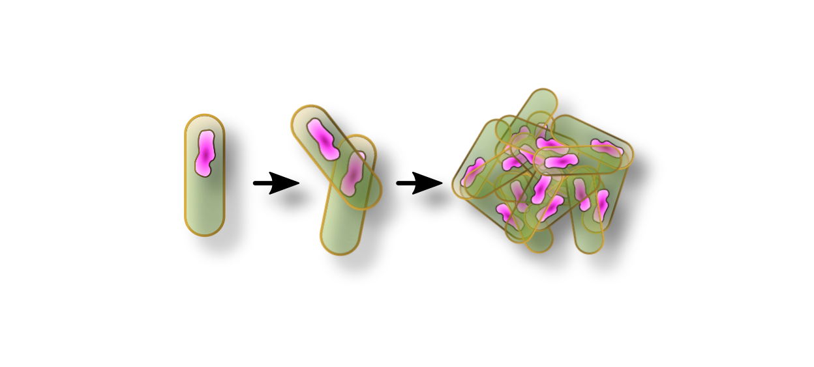
Example 1.1.2: Bacteria and nutrient populations.
Imagine a case similar to the one above, but we introduce a nutrient population, \(v\). We assume that a bacterium can divide at a rate \(r\) if and only if it can interact with enough nutrient. However, the nutrient is depleted at a rate \(r\) as the bacteria interact with it.
Here, the equation governing this system is going to be provided. However, later on we will learn how to write down and interpret interaction equations of the form
The governing equations are
We notice that we can add the two equations and integrate to provide a conserved quantity,
We can substitute equation (1.11) into equation (1.9) to get
This is known as the logistic equation and we will see it many times throughout these notes; it is a simple example of competition between species for resources.
Using partial fractions, we can directly solve equation (1.12). Specifically,
see Figure 1.1(b).
Comparing the models of bacteria growth, illustrated in Figure 1.1, we see that equation (1.12) is a more realistic model for growth because there is a maximum population value which can be supported by the experiment. This maximum value is given by \(c\) and is known as the carrying capacity. The parameter grouping \(rc\) is also important as this controls the time scale over which this maximum is obtained.
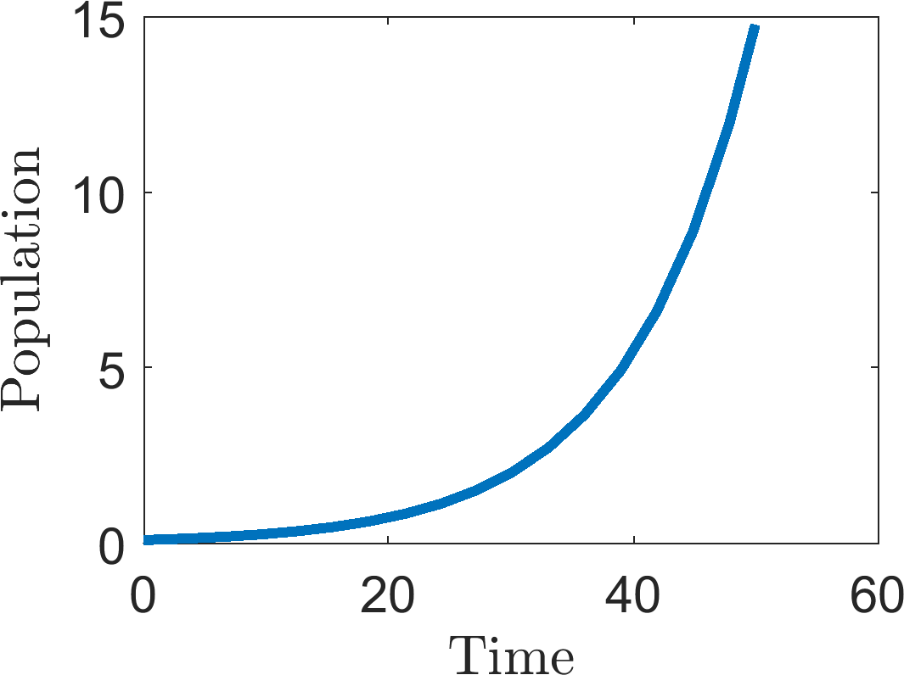
(a)
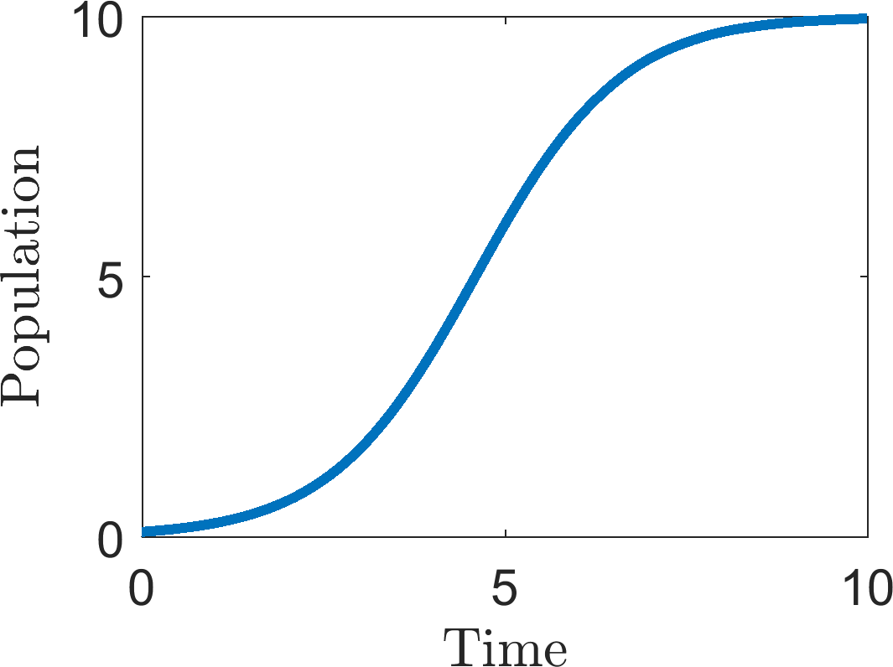
(b)
(a) Exponential growth. Parameters are \(r=u_0=0.1\). See example 1.1.1. (b) Logistic growth. Parameters are \(c=10\), \(r=u_0=0.1\). See example 1.1.2.
Example 1.1.3: Duffing’s equations.
For our last example, consider the Duffing oscillator. The equation is simply a toy example that can be used to examine complex phenomena in a simple equation. In terms of interpretation, you can think of the equation as modelling the displacement of a beam near two magnets. Critically, the beam and magnets are being forced to oscillate with amplitude \(\gamma\) and frequency \(\omega\) (see Figure 1.2(a)).
We are not going to try and analytically solve or analyse Duffing’s equation. Instead, we illustrate the dynamics that the equation produces as the amplitude of oscillation, \(\gamma\), increases. Specifically, as \(\gamma\) is increased the system becomes chaotic (see Figure 1.2(b)).
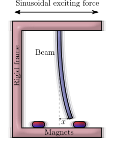
(a)
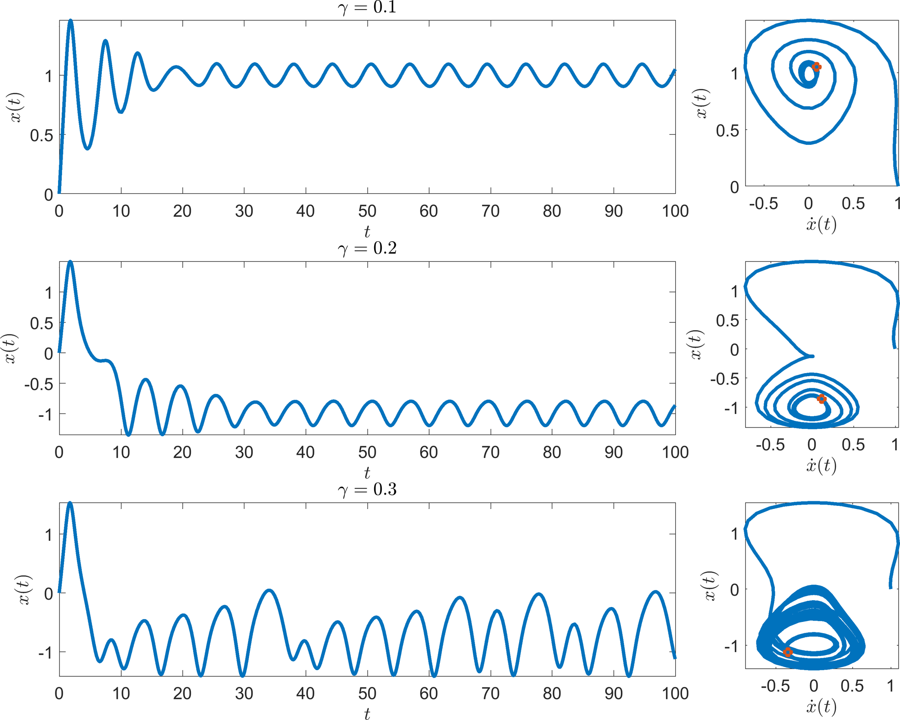
(b)
(a) Schematic diagram of the system underlying Duffing’s equation. (b) Three simulations of equation (1.14) with increasing values of \(\gamma\).
Definition 2
The order of a differential equation is the value of the highest derivative in the equation.
Examples 1.1.2 and 1.1.1 are both first-order equations, whilst example 1.1.3 is a second-order equation. Generally (like polynomial equations of order) a differential equation of order \(n\) will have \(n\) linearly independent solutions.
Definition 3
A system of differential equations is autonomous if the system does not explicitly depend on the independent variable.
When the variable is time, they are also called time-invariant systems; this simply means that we are assuming that the defined underlying laws of the system are identical to those for any point in the past, or future.
Definition 4
To save time we use a dot or prime mark to denote a derivative with respect to the argument, thus,
Traditionally, dots are primarily used when the variable is time and primes are used otherwise. Note that higher order derivatives are signified by the appropriate number of dots or primes. Namely, a second derivative would be denoted by two dots or primes, etc.
Definition 5
A trajectory is a solution, \(u(t)\).
The graphs in Figures 1.1 and 1.2 illustrate single trajectories of their respective systems.
In this course we are going to occupy ourselves with systems of autonomous first-order equations, of the form
This may seem highly restrictive. However, systems of first-order equations can have extremely complicated properties, such as oscillations and chaos, which we will try to understand.
Critically, equations of higher order can be written as a system of first-order equations. For example, if
then we can define \(n-1\) new equations of the form \(\boldsymbol{v}_1=\mathrm{d}\boldsymbol{u}/\mathrm{d}t\) and \(\boldsymbol{v}_i=\mathrm{d}\boldsymbol{v}_{i-1}/\mathrm{d}t=\mathrm{d}^{i} \boldsymbol{u}/\mathrm{d}t^{i}\) for \(2\leq i \leq n-1\) to produce the first-order system
Example 1.1.4: Duffing’s equations without forcing.
Setting \(\gamma=0\) in Duffing’s equation and letting
then we are able to convert the single second-order equation seen in equation (1.2(b)) to two first order ODEs,
Note that \(v\) is an apt variable name for the variable, because, as discussed in example 1.1.3, \(x\) can be thought of as position, making \(v\) a velocity.
Theorem 1.1.1
A solution trajectory, \(\boldsymbol{u}(t)\), of equation (1.16) cannot self-intersect (see Figure 1.3).
Proof
Suppose there is an intersection. Hence, there exist two points, \(t_1\) and \(t_2\), such that \(\boldsymbol{u}(t_1)=\boldsymbol{u}(t_2)\) then we will also have that \(\boldsymbol{F}(\boldsymbol{u}(t_1))=\boldsymbol{F}(\boldsymbol{u}(t_2))\). However, the curves intersect, thus, the curves must be travelling in different directions at \(t_1\) and \(t_2\) (see Figure 1.4), meaning that the derivatives are different there, i.e. \(\dot{\boldsymbol{u}}(t_1)\neq\dot{\boldsymbol{u}}(t_2)\). But
which produces a contradiction. Hence the curves cannot intersect.
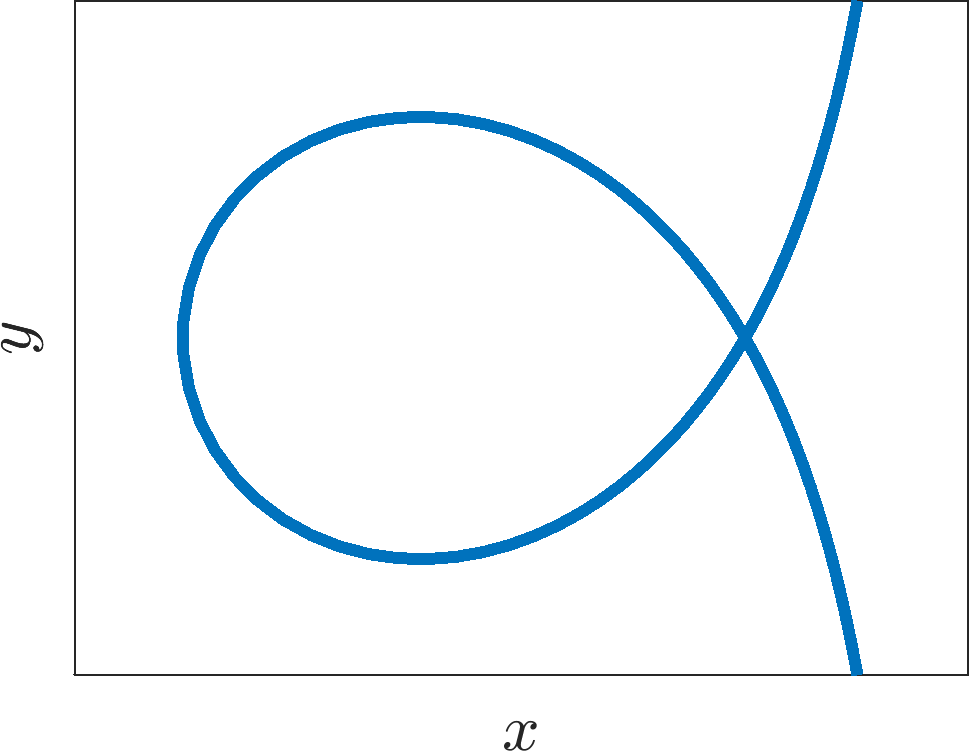
A solution of equation (1.16) cannot look like this.
1.1.1 Existence and uniqueness
With this being an applied mathematics course we are often very ‘fast and loose’ with our rigour. However, it is good to know that theorems have been proven regarding the existence and uniqueness of solutions to equation (1.16). Here we will quote the theorem in one dimension, but the theorem can be expanded to any number of variables.
Theorem 1.1.2
Existence-Uniqueness theorem.
Suppose the function \(F(u)\) is differentiable and the derivative, \(F'(u)\), is continuous for all values of \(u\) then there will exist some constant \(c>0\) such that
has a solution and it is guaranteed to exist and be unique in some finite time interval \(|t-t_0|<c\).
Note that:
we will not consider the proof here. For those who are interested look up “Picard’s theorem”. Picard’s theorem is actually weaker than the one specified above, but theorem 1.1.2 expresses the statement in the most useful form for us.
in many cases solutions will exist and be unique for all time, but, the theorem hardly ever provides an optimal value for \(c\). However, the theorem is general enough to include cases where ‘blow up’ occurs. Namely, blow up occurs when a solution tends to infinity in finite time.
without loss of generality we can always take \(t_0=0\) (why?). This is only true in autonomous systems.
solution curves cannot intersect, otherwise there would be two different solutions going through the same point and there would not be uniqueness around the intersection (see Figure 1.4).
the case for higher dimensional systems is effectively the same except we need the function
\[\begin{equation*} \bm{F}(\bm{u})=\left( \begin{array}{c} {F_1}(u_1,u_2,u_3,\dots,u_n)\\ {F_2}(u_1,u_2,u_3,\dots,u_n)\\ \vdots\\ {F_n}(u_1,u_2,u_3,\dots,u_n) \end{array} \right) \tag{1.26}\end{equation*}\]to be continuous in all of its derivatives.
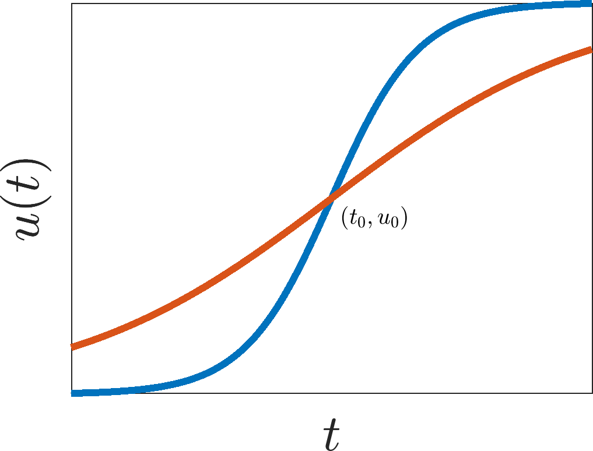
Two different solution curves of a one-dimensional ODE cannot intersect.
Definition 6
A differentiable function is monotonic if its derivative never changes sign. Moreover, the function is monotonically increasing (decreasing) if the derivative is positive (negative).
Definition 7
A differentiable function is strictly monotonic if its derivative never changes sign and is never zero.
See Figure 1.5 for examples of definitions 6 and 7.
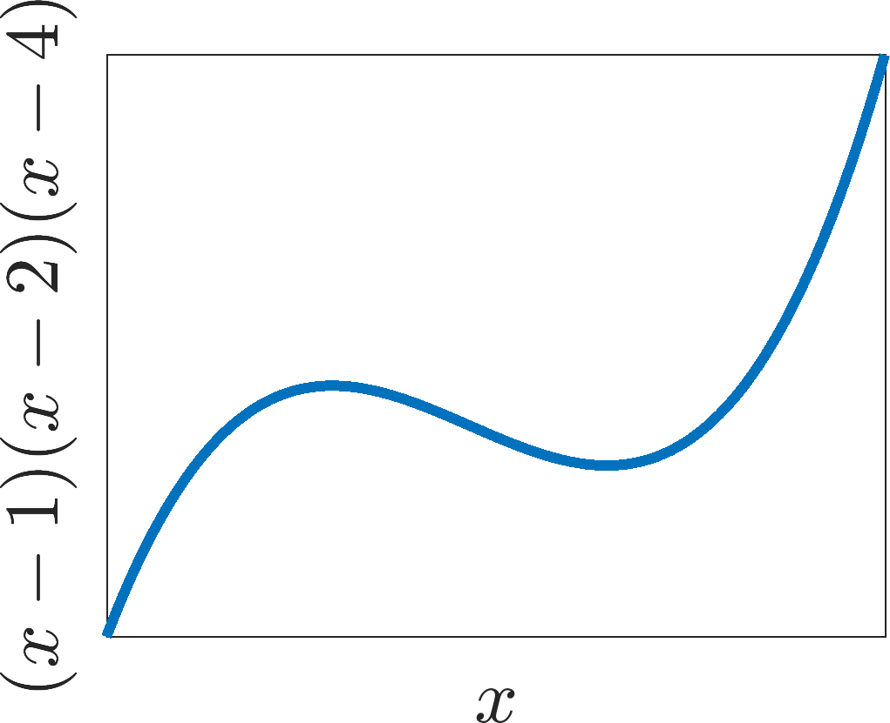
(a)
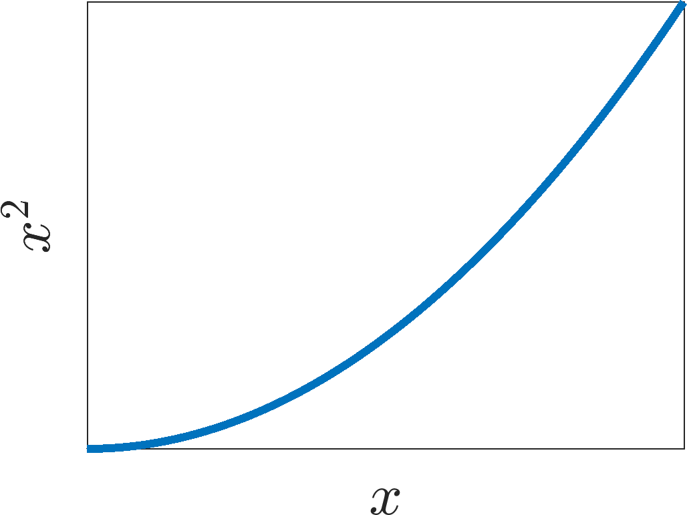
(b)
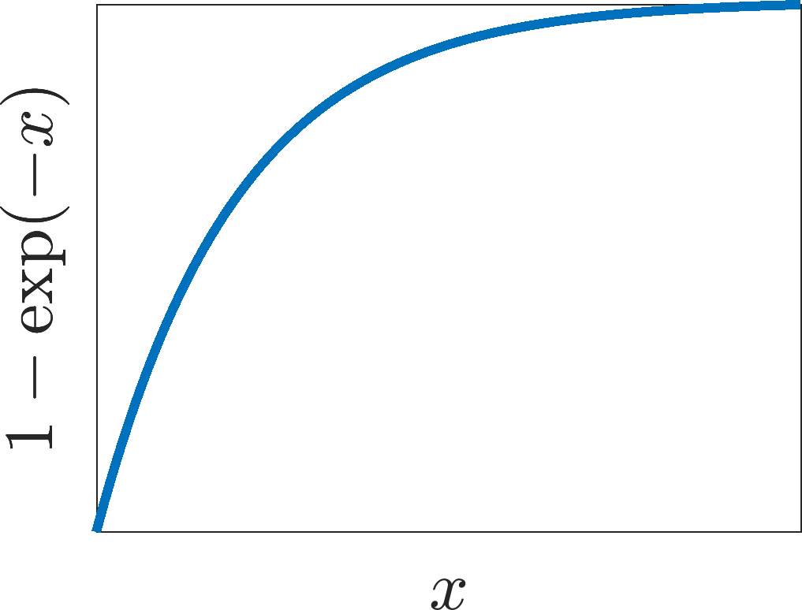
(c)
(a) A non-monotonic function. (b) A monotonic function. (c) A strictly monotonic function.
Corollary 1.1.3
Suppose \(f(u)\) is a scalar function that is continuously differentiable. The solution, \(u(t)\), of the one-dimensional ODE,
cannot oscillate. Specifically, \(u(t)\) must either be constant, or a monotonically increasing, or decreasing function.
Proof
Suppose that \(u(t)\) is non-monotonic and hence nonconstant. By definition its derivative changes sign. By continuity there is somewhere, \(t_c\), such that \(\mathrm{d}u(t_c)/\mathrm{d}t=0\). Let \(u(t_c)=u^*\) then, \(u\) is a solution of
Let us construct the constant function \(u_c\equiv u^*\). We note that, \(\mathrm{d}u_c/\mathrm{d}t=0\) since \(u_c\) is a constant. Also \(f(u_c)=f(u^*)=f(u(t_c))=0\) and, thus, \(u_c\) is also a solution to equation (1.28). However, this means that we have two different solutions, \(u\) and \(u_c\), to equation (1.28) violating the existence uniqueness theorem. By contradiction \(u(t)\) has to be monotonic.
This means that to have oscillatory phenomena in a system either we need more than one population, or the system has to be non-autonomous. See example 1.1.3 for a case where both of these factors are present and do indeed produce oscillations (and chaos).
1.2 Taylor expansions
This section is to remind you of the Taylor expansion technique. The Taylor expansion is one of the most powerful tools for an applied mathematician because very often we want to know what happens to a trajectory near some critical point. Although the kinetics may be very non-linear and difficult to understand globally we can use the Taylor expansion to simplify the dynamics in a small region around the critical point in order to gain knowledge about the dynamics in this region.
Theorem 1.2.1
Suppose \(f(x)\) is infinitely differentiable at a point \(a\) then the Taylor series of \(f\) at \(a\) is the power series
which is explicitly
where \(n!\) denotes the factorial of \(n\) and \(f^{(n)}(a)\) denotes the \(n^{th}\) derivative of \(f\) evaluated at the point \(a\). The derivative of order zero of \(f\) is defined to be \(f\) itself and \((x-a)^0\) and \(0!\) are both defined to be 1.
Example 1.2.5: Taylor expansions.
\(\exp(x)\) at \(x=0\) (see Figure 1.6).
\[\begin{equation*} \exp(x)=1+x+{\frac {1}{2}}{x}^{2}+{\frac {1}{6}}{x}^{3}+O \left( {x}^{4} \right) . \tag{1.31}\end{equation*}\]\(\cos(x)\) at \(x=0\).
\[\begin{equation*} \cos(x)=1-{\frac {1}{2}}{x}^{2}+O \left( {x}^{4} \right) . \tag{1.32}\end{equation*}\]\(1/\left(1+x\right)\) at \(x=0\)
\[\begin{equation*} \frac{1}{1+x}=1-x+{x}^{2}-{x}^{3}+O \left( {x}^{4} \right) . \tag{1.33}\end{equation*}\]\(\sin(x)\) at \(x=\pi/2\).
\[\begin{equation*} \sin(x)=1-{\frac{1}{2}} \left( x-{\frac {\pi}{2}} \right) ^{2}+O \left( \left( x-{\frac {\pi}{2}} \right) ^{4} \right) . \tag{1.34}\end{equation*}\]
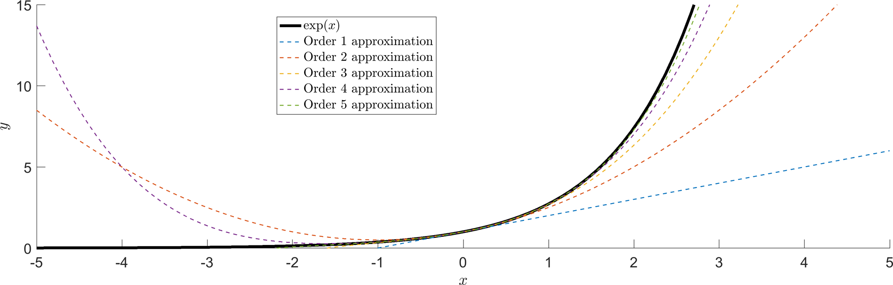
Approximating the exponential function with different orders of Taylor series.
Although Theorem 1.2.1 is the most general form of Taylor’s theorem we are frequently going to want to know what happens near a specific point. Namely, if \(x\) is the point of interest, what does the function look like at \(x+\epsilon\), where \(\epsilon \ll 1\). Specifically, this simply comes down to redefining \(x\coloneqq x+\epsilon\) and \(a\coloneqq x\) in Theorem 1.2.1, namely
Since \(\epsilon\ll 1\) we can truncate this series to obtain a good estimate after only a first term in \(\epsilon\),
This is known as linearisation. You are taking the (possibly complicated) function \(f\) and rewriting it as a linear function in \(\epsilon\).
Courses in the third year will deal with what information you get in the case that you truncate at \(\epsilon^2\), or higher. This is non-linear analysis.
1.2.1 Multivariate Taylor expansion
A similar theorem can be stated when the function \(f\) has more than one argument.
Definition 8
If \(f\) is a function of more than one variable it is called multivariate.
Here we simply state the expansion to first order expansion that we will be concerned with throughout the course.
where we observe that we have used a subscript \(f_x\) to denote the partial derivative \(\partial f/\partial x\) and similarly for \(f_y\).
Definition 9
For brevity we use subscripts to stand for partial derivatives,
Example 1.2.6: Multivariate Taylor expansion.
\(\sin(x+y)\) at \(x=y=0\).
\[\begin{equation*} \sin(x+y)\approx x+y. \tag{1.39}\end{equation*}\]\(\sin(x)\cos(y)\) at \(x=y=0\).
\[\begin{equation*} \sin(x)\cos(y)\approx x. \tag{1.40}\end{equation*}\]
1.3 Polar coordinates
Many phenomena that we will model will fall under the consideration of spatial movement, for example in Chapter 2 and question sheet two we will be considering planetary movement. Critically, in many of these cases the objects tend to move in circular trajectories orbiting a single point. Thus, it is more natural to use polar coordinates \((r,\theta)\) to describe the motion, rather than Cartesian coordinates \((x,y)\) (see Figure 1.7). However, it may be easier to model the system in Cartesian coordinates. Thus, we need to know how to convert between one set and another.
Cartesian and polar coordinates.
Figure 1.7 illustrates the fundamental relationships between the Cartesian and the polar coordinates, namely:
Critically, these specify \(x\) and \(y\) singly as functions \((r,\theta)\). These, in turn, can be used to construct equations for \(r\) and \(\theta\) separately as functions of \((x,y)\), namely,
and
where the appropriate function \(\theta(x,y)\) is chosen depending on whichever is easiest to use.
Example 1.3.7: Cartesian to polar conversion.
Suppose
how do we convert the system from Cartesian coordinates to polar coordinates?
First we use the condition that \(r^2=x^2+y^2\). Taking derivatives we get
At which point we can exchange all Cartesian coordinates for their polar analogues, namely:
Next we need \(\dot{\theta}\). Since there are multiple (equivalent) ways of representing \(\theta\) there are multiple (equivalent) forms of the derivative; here only one will be presented. Other forms follow exactly the same procedure. We note that
Rearranging equation (1.49) gives
where the arguments of \(f\) and \(g\) have been suppressed for brevity.
In the above example we created \(\dot{r}\) first and then used this to produce \(\dot{\theta}\). In the following example we show how to do the substitution all in one go.
Example 1.3.8: A quicker conversion
From
we generate
This can be seen as a set of simultaneous equations and, thus, solved as a matrix problem
The matrix can be inverted to produce
which allows us to reproduce
Generally, nonlinear equations are not solvable; however, we will see in the next example that polar coordinates can convert nonlinearities in \((x,r)\) to linearities in \((r,\theta)\)
Example 1.3.9: Solving ODEs in polar coordinates
Consider the following system
Convert to polar coordinates
and
which implies
Assuming initial conditions \(\theta(0)=0\) and \(r(0)=r_0>0\) we can immediately integrate to get \(\theta=-t\) and
Rearranging this gives,
From equation (1.76) we can see that \(r(t)\rightarrow 1\) as \(t\rightarrow \infty\). Critically, we can reconstruct the Cartesian solution by considering the polar identities. Firstly, since \(\theta=-t\) the solutions spiral at a constant rate. Note the spirals go clockwise as we normally take positive angles to be anticlockwise. Further, any trajectory must head towards the circle \(r=1\).
The full dynamics are simulated in Figure 1.8.
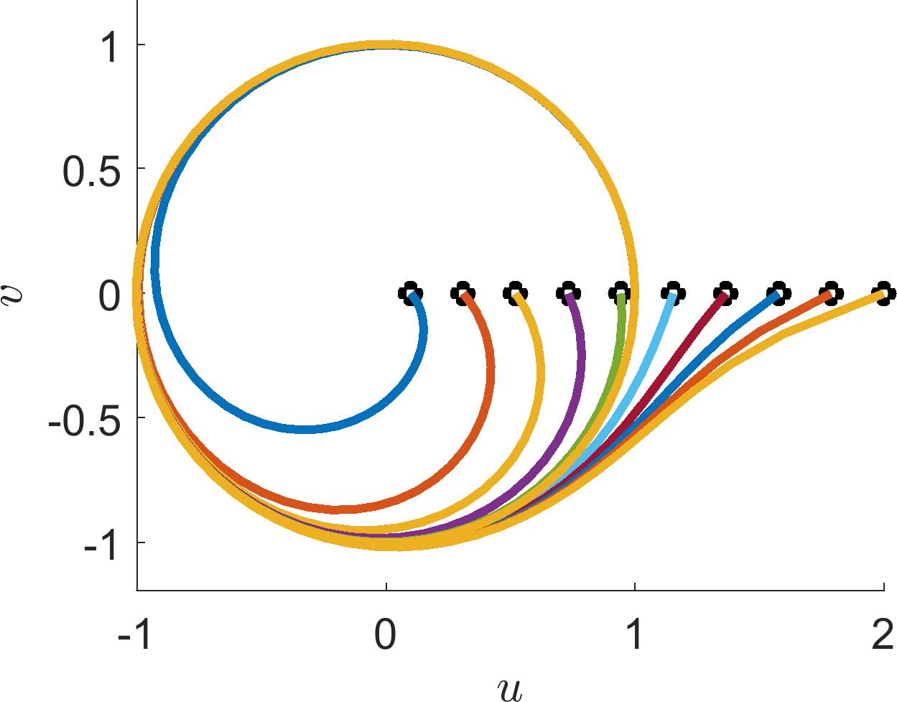
1.4 Check list
By the end of this chapter you should be able to:
reproduce all the definitions;
state all theorems;
solve simple linear ODE systems;
prove trajectories of autonomous systems cannot cross themselves;
prove that an ODE of one variable cannot oscillate;
derive single variable Taylor series of any order;
derive multivariate Taylor series up to first order;
convert systems of ODE equations of Cartesian variables into polar variables and back again.
2 How to model a system
The Chemical Basis of Morphogenesis. A. Turing 1952.
This model will be a simplification and an idealization, and consequently a falsification. It is to be hoped that the features retained for discussion are those of greatest importance in the present state of knowledge.
Empirical Model-Building and Response Surfaces. G. Box & N. Draper 1987.
All models are wrong, but some are useful.
Modelling a system, whether it be physical, chemical, or biological, is, in some ways, more of an art than a science. You try and strip away all extraneous information and mathematically describe that which is left. Sometimes there are physical laws to help you, e.g. gravity, conservation of energy and mass. Other times we only have experimental intuition, e.g. predator-prey interactions from population data. In either case, the central idea of modelling is that it should always form part of a cyclical process (see Figure 2.1).
You try to start with physical intuition (experiment), represent the important parts mathematically (model), hopefully reproduce reality (test) and, finally, use your mathematical model to predict unknown outcomes (predict). These predictions can then feed back into experiment and the process begins anew.

Diagram of the modelling cycle.
In this chapter we are going to review some of the methods that can be used to produce a mathematical interpretation of reality.
2.1 Physical laws
Definition 10
A constitutive relation (or ‘physical law’) is a rule that the modeller adds to the system based on their experimental experience, which relates interacting components.
Physics has many laws such as: conservation of energy, general relativity and the laws of thermodynamics. There is (as yet) no fundamental reason for these laws to hold. We just take them as laws because they fit the data that we observe.
Here are just a few examples of the laws that you might come across.
Newton’s Law of Cooling.
The rate of cooling of a body is proportional to the difference between the body’s temperature and the temperature of its environment.
Let \(T\) and \(T_e\) be the temperatures of the object and the environment, respectively. Then
\[\begin{equation*} \dot{T}=k(T_e-T), \tag{2.1}\end{equation*}\]where \(k\) is defined to be the heat transfer coefficient.
Example 2.1.10: Cooling tea
Suppose I prepare two cups of tea at exactly the same time, so initially they both start at \(100^o\)C. I quickly add enough milk to cup 1 to cool it to \(90^o\)C. Ten minutes later I add milk to cup 2, which cools cup 2 by \(10^o\)C. Which cup is hotter at that point?
The general solution to equation (2.1) is
\[\begin{equation*} T(t)=T_e+\l T(0)-T_e\r e^{-kt}, \tag{2.2}\end{equation*}\]where \(T(0)\) is the initial temperature. For cup 1 we have
\[\begin{equation*} T_1(10)=T_{e}+\l 90-T_{e}\r e^{-k10}. \tag{2.3}\end{equation*}\]For cup 2 we have
\[\begin{equation*} T_2(10)=T_{e}+\l 100-T_{e}\r e^{-k10}-10. \tag{2.4}\end{equation*}\]Subtracting \(T_1\) from \(T_2\) gives
\[\begin{equation*} T_1(10)-T_2(10)=10\l 1- e^{-k10}\r>0. \tag{2.5}\end{equation*}\]Since \(\exp(0)=1\) and \(\exp(-kt)\) is a strictly monotonically decreasing function of time. Hence, cup 1 is hotter than cup 2 at time \(t=10\) minutes. This means that the earlier you put your milk in, the hotter your tea will stay!
Note that neither the ambient temperature, nor the heat transfer coefficient were needed.
Newton’s Second Law of Motion
The rate of change of momentum of a body is directly proportional to the force applied to the body.
This is the standard \(F=ma\) that everyone knows and loves (assuming that the mass remains the same throughout the interaction), where the acceleration, \(a\), is the second derivative of the location with respect to time, \(a=\ddot{x}\).
Newton’s Law of Gravitation2
A particle attracts every other particle in the universe using a force that is directly proportional to the product of their masses and inversely proportional to the square of the distance between their centres.
Suppose body \(i\) has mass \(m_i\) and is at position \(\boldsymbol{r}_i=(x_i,y_i)\). Body \(i\) is then separated from body \(j\) by a distance \(r_{ij}=\sqrt{\left(x_i-x_j\right)^2+\left(y_i-y_j \right)^2}=|\boldsymbol{r}_i-\boldsymbol{r}_j|\). Let \(G\) be the universal gravitational constant. Then the force, \(\boldsymbol{F}_{ij}\), acting on body \(i\) from body \(j\) is
\[\begin{equation*} \bm{F}_{ij}=-G\frac{m_im_j}{r^2_{ij}}\bm{\hat{r}}_{ji}, \tag{2.6}\end{equation*}\]where
\[\begin{equation*} \bm{\hat{r}}_{ji}=\frac{r_i-r_j}{|r_i-r_j|} \tag{2.7}\end{equation*}\]is the unit vector from body \(j\) to body \(i\).
Note that the force is a vector-valued quantity because it has a magnitude, but also a direction, as it acts in the direction of the line joining the bodies.
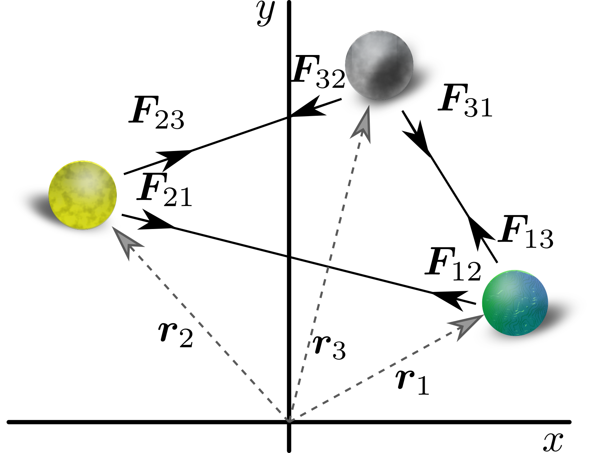
Figure 2.2. Schematic diagram of the three-body problem.
Example 2.1.11: Three body problem
We can combine the Second Law of Motion and the Law of Gravitation in order to predict the positions of planets interacting through their gravitational fields (see Figure 2.2). Consider three planets with the same mass, \(m\), and positions \(\boldsymbol{r}_1(t)\), \(\boldsymbol{r}_2(t)\) and \(\boldsymbol{r}_3(t)\), respectively. Further, we note that since we are dealing with acceleration (a second-order equation) we will need to specify two initial conditions, the position and velocity. Let the initial positions be \(\boldsymbol{r}_i(0)=\boldsymbol{r}_{i0}\) and the initial velocities \(\dot{\boldsymbol{r}}_i(0)=\boldsymbol{v}_{i0}\). The governing equations are
\[\begin{align*} &m\ddot{\bm{r}}_1=-G\frac{m^2}{|\bm{r}_1-\bm{r}_2|^3}\l\bm{r}_1-\bm{r}_2\r-G\frac{m^2}{|\bm{r}_1-\bm{r}_3|^3}\l\bm{r}_1-\bm{r}_3\r,\tag{2.8}\\ &m\ddot{\bm{r}}_2=-G\frac{m^2}{|\bm{r}_2-\bm{r}_1|^3}\l\bm{r}_2-\bm{r}_1\r-G\frac{m^2}{|\bm{r}_2-\bm{r}_3|^3}\l\bm{r}_2-\bm{r}_3\r,\tag{2.9}\\ &m\ddot{\bm{r}}_3=-G\frac{m^2}{|\bm{r}_3-\bm{r}_1|^3}\l\bm{r}_3-\bm{r}_1\r-G\frac{m^2}{|\bm{r}_3-\bm{r}_2|^3}\l\bm{r}_3-\bm{r}_2\r. \tag{2.10}\end{align*}\]where we remember that this is a vector equation, \(\boldsymbol{r}_i=(x_i,y_i)\), so there are actually six second-order ODEs here, rather than three.
The three-body problem illustrates chaotic behaviour, in the sense that the outcome is extremely sensitive to the initial conditions. This can be seen in the simulations of Figure 2.3.
Simulation tip:
when solving equations (2.8)–(2.10) numerically we could separate each equation into its Cartesian components and reduce the second-order equation to two first-order equations. Namely, we would introduce \((v_{ix},v_{iy})=(\dot{x}_i,\dot{y}_i)\). Thus, we would have a system of twelve ODEs to solve, with variables
\[\begin{equation*} (x_1,y_1,v_{1x},v_{1y},x_2,y_2,v_{2x},v_{2y},x_3,y_3,v_{3x},v_{3y}). \tag{2.11}\end{equation*}\]However, since \(x_i\) and \(y_i\) are perpendicular Cartesian coordinates it turns out to be a good idea to use complex numbers. Specifically, instead of writing two ODEs for each of \(x_i\) and \(y_i\) we can simply solve one ODE in terms of the complex quantity \(\boldsymbol{r}_i=x_i+Iy_i\), which can be handled by numerical solvers. Thus, we simplify the numerical solution from twelve to six equations.
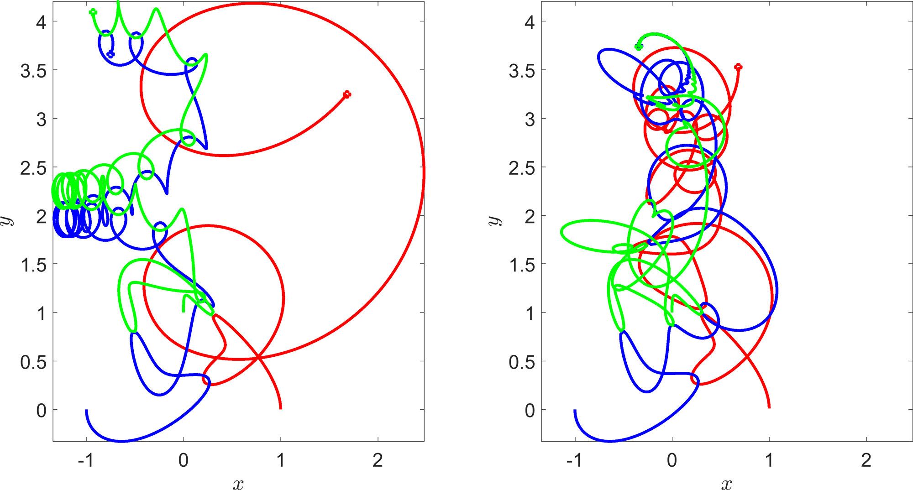
Figure 2.3. Two simulations of the three-body problem. The green and red trajectories are identically initiated. The blue trajectory is initiated at \((-1,0.01)\) in the left figure and at \((-1,0)\) in the right figure.
Hooke’s law
The force, \(F\), needed to extend or compress a spring by some distance, \(x\), scales linearly with respect to that distance,
\[\begin{equation*} F=kx. \tag{2.12}\end{equation*}\]The constant of proportionality, \(k\), defined by this law is known as the spring constant and is measured in units of force per distance, e.g. N/m.
Depending on the material Hooke’s law only holds true for small extensions and compressions. For example, this law suggests that given enough force a spring can pass through itself. Further, biological materials may not follow the law because they break if stretched too far (e.g. bone), or they may grow, or permanently deform3, thus, reducing the force needed to give the same extension (e.g. skin).
2.1.0.1 Pendulums
In this section we take an extended look at pendulums depending on Hooke’s law and simple Newtonian mechanics. Specifically, we consider a spring, oscillating up and down, and a bob, oscillating side to side (see Figure 2.4).
(a)
(b)
Two types of pendulums: (a) an oscillating spring. (b) a weight on a string.
Assuming that the spring conforms to Hooke’s Law and applying Newton’s Second Law of motion the equation of motion for the spring is
where \(y\) is the vertical displacement of the spring, \(m\) is the mass attached to the spring and \(k\) is the spring constant. The negative sign shows that the force is always directed to the resting position of the spring (here, taken to be the origin). If the negative sign was not there then we would be saying that the pendulum’s position would grow exponentially with an applied force, which is not very realistic.
The pendulum bob is slightly more complicated as we have to account for two-dimensional motion. Complicating the matter further is that the pendulum weight is confined to move on the arc of a circle, meaning that the problem is easier to solve in polar coordinates.
To derive the equations of motion we split the component of force acting on the pendulum into components acting along the radial and angular directions of the system, as shown in Figure 2.4(b). Critically, we only need to consider the angular acceleration, which can be derived to be \(r\ddot{\theta}\). The derivation will be seen on problem sheet two. Using Newton’s Second Law again we derive that
One interesting point we can immediately see from equation (2.14) is that the mass of the pendulum does not influence the solution of the equation, which can be compared with the dependence of equation (2.13) on the mass.
Equation 2.14 can be solved directly in terms of ‘elliptic integrals’, but this amounts to little more than integrating the equation twice and leaving the equation written in integral form. More insight into the solution can be gained if the angle of oscillation is small. In this case we can linearise the right-hand side of equation (2.14) by using Taylor series about zero, i.e. \(\sin(\theta)\approx\theta\). Hence, equation (2.14) can be approximated by
which can be seen to be analogous to equation (2.13).
If the different pendulums are displaced and released from rest then the amount of error introduced into the equation is determined by the initial displacement. Figure 2.5 compares4 equations (2.13) and (2.14) with different initial conditions. Thus, we see that increasing the initial amplitude of the bob pendulum causes the wave length of the oscillation to increase, or frequency of oscillation to decrease.
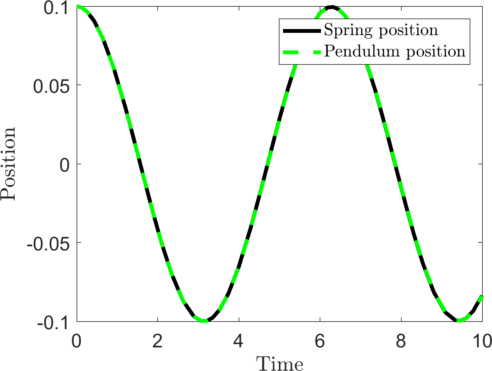
(a)
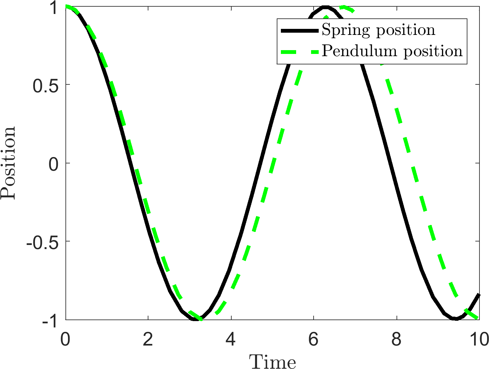
(b)
Comparing equations (2.13) and (2.14) with initial conditions (a) \(y=0.1=\theta\) and (b) \(y=1=\theta\). Parameter values \(r=g=k=m=1\).
Definition 11
Any system defined by an equation of the form
is said to undergo simple harmonic motion.
Equation 2.16 can be solved to produce the solution
where \(A\) and \(B\) are specified through the initial conditions.
2.2 Law of Mass Action
All of the above physical laws are very specific in their application. In this section we will learn about a much more general technique that will allow us to build an ODE system out of multiple interacting populations. These populations could represent chemical compounds, humans, cells or animals as well as different states within a population i.e. infected humans and susceptible humans. The law presented in this section is applied whenever the populations of the system are able to: (i) change identities; (ii) create more population members; or (iii) cause populations to decay. Specific examples of each of these interactions are, respectively: (i) susceptible humans becoming infected through interactions with a diseased person; (ii) animals giving birth; (iii) predators eating prey. Note that a change-of-identity interaction can itself be thought of as a combination of creation and degradation operations. For example, in the above case of infection a member of the susceptible human population is removed from the system, whilst an infected human is added to the system. Thus, all interactions can be made through combining creation and degradation operations.
We use chemical reaction notation to specify the outcomes of population interactions. Consider a system composed of \(n\) different interacting populations \((u_1,\dots,u_n)\). We assume that all interactions between the population elements lead to the creation, or destruction, of one (or more) of the \(n\) populations.
Definition 12
A rate equation specifies that an interaction involves \(a_1\) members of population \(u_1\), \(a_2\) members of population \(u_2\), etc. and produces \(b_1\) members of population \(u_1\), \(b_2\) members of population \(u_2\), etc. The equation is written as
where \(r>0\) is the reaction rate.
Note that some of the \(a_i\) and \(b_i\) values can be zero.
Example 2.2.12: Reaction equation examples
Birth
Two agents of population \(u\) come together to produce a third,
\[\begin{equation*} 2u\stackrel{r}{\rightarrow}3u. \tag{2.19}\end{equation*}\]Death
An agent of population \(u\) dies (or is destroyed) due to natural causes,
\[\begin{equation*} u\stackrel{r}{\rightarrow}\slashed{0}. \tag{2.20}\end{equation*}\]Predation
A predator population, \(v\), converts energy from eating prey, \(u\), into offspring,
\[\begin{equation*} u+v\stackrel{r}{\rightarrow}2v. \tag{2.21}\end{equation*}\]Infection
Consider a population of infected people, \(I\), who are able to infect a susceptible population, \(S\). Further, over time, the infected people recover and become susceptible again,
\[\begin{align*} I+S&\stackrel{r_1}{\rightarrow}2I,\tag{2.22}\\ I&\stackrel{r_2}{\rightarrow}S. \tag{2.23}\end{align*}\]
Rate equations provide a rigorous way of defining all of the interactions a system is assumed to undergo. However, we still require a method of converting the rate equation into an ODE. This is the power of the Law of Mass Action.
Definition 13
The Law of Mass Action states that the production rate of a reaction is directly proportional to the product of the input population sizes. Specifically, if
is the reaction of interest then the production rate is proportional to
and the accompanying ODEs are
Note that in converting from reaction equation to the ODE of \(u_i\) we need to account for the stoichiometry, i.e. \((a_i-b_i)\). Further, when multiple reactions are considered, the terms arising from the Law of Mass Action are simply added together as independent terms.
Example 2.2.13: Law of Mass Action examples
Birth
\[\begin{align*} 2u&\stackrel{r}{\rightarrow}3u,\\ \implies &\dot{u}=ru^2. \tag{2.29}\end{align*}\]Death
\[\begin{align*} u&\stackrel{r}{\rightarrow}\slashed{0},\\ \implies &\dot{u}=-ru. \tag{2.30}\end{align*}\]Predation
\[\begin{align*} u+v&\stackrel{r}{\rightarrow}2v,\\ \implies &\dot{u}=-ruv,\tag{2.31}\\ &\dot{v}=ruv. \tag{2.32}\end{align*}\]Infection
\[\begin{align*} I+S&\stackrel{r_1}{\rightarrow}2I,\quad I\stackrel{r_2}{\rightarrow}S,\\ \implies &\dot{S}=-r_1IS+r_2I,\tag{2.33}\\ &\dot{I}=r_1IS-r_2I. \tag{2.34}\end{align*}\]
Example 2.2.14: Zombies
Humans, \(H\), and zombies, \(Z\), interact through the following three interactions (see Figure 2.6):
humans kill zombies at a rate \(a\);
zombies kill humans at a rate \(b\);
zombies infect humans at a rate \(c\).
The reaction equations for this system are,
The ODE form of the system is
Since \(\alpha=b+c>0\) the population of \(H\) is always decreasing. However, \(\beta=c-a\), which could be either positive or negative. Critically, if \(\beta>0\implies c>a\) then the zombie population will grow. Alternatively, if \(\beta<0 \implies c<a\) then the zombie population decreases. Thus, the survival of the human race all depends on the sign of \(c-a\), which, explicitly, is the ‘net rate increase of zombies’, i.e. zombie production minus zombie destruction.
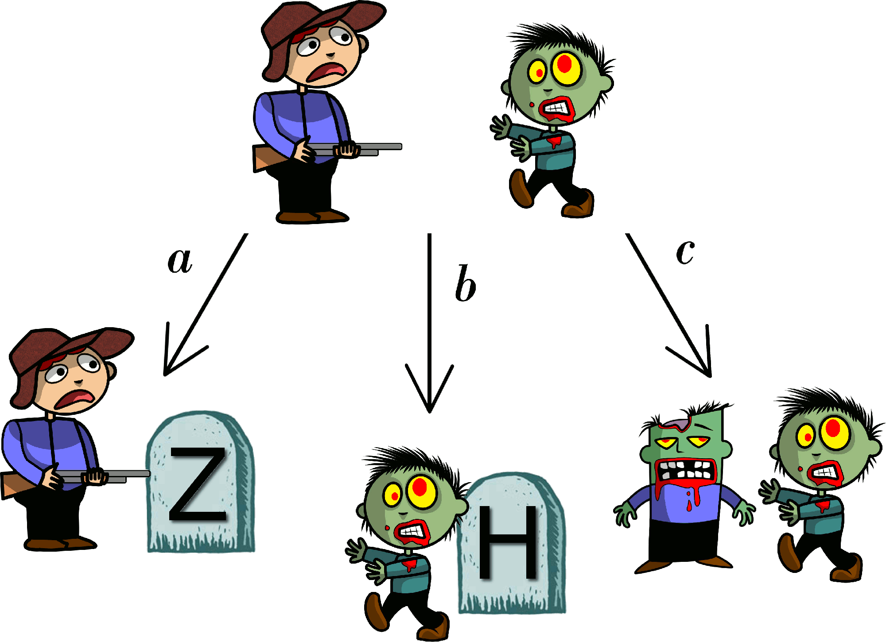
Possible outcomes of human-zombie interactions.
2.3 Check list
By the end of this chapter you should be able to:
define all of the constitutive laws;
solve problems involving Newton’s laws, Hooke’s law and simple harmonic motion;
convert a system of population interactions into reaction equations;
convert reaction equations into ODEs using the Law of Mass Action.
3 Non-dimensionalisation
Wild Thing. J. Bazell 2013.
In metric, one milliliter of water occupies one cubic centimeter, weighs one gram, and requires one calorie of energy to heat up by one degree centigrade — which is 1 percent of the difference between its freezing point and its boiling point. An amount of hydrogen weighing the same amount has exactly one mole of atoms in it. Whereas in the [imperial] system, the answer to “How much energy does it take to boil a room-temperature gallon of water?" is “Go fuck yourself”, because you can’t directly relate any of those quantities.
Thus far we have been fairly lax about defining the quantities we have actually been measuring. Further, once we have specified what the quantity actually is, what units are we using to measure the quantity? For example, if we are measuring distance are we doing it in mm, miles or light-years? Equally, is time measured in seconds, minutes or hours? Finally, constitutive laws often introduce parameters that are not quantified accurately, or alternatively, we may be interested in understanding how a solution depends on a particular parameter as it is varied.
The Law of Mass Action, in particular, could be thought to be a troublesome law as it introduces a rate parameter for each reaction equation that is considered. For example, if a system of ODEs is defined by a set of non-linear equations it is highly unlikely to be solvable in closed form. Thus, if there is a large number of parameters in the system, it becomes very difficult to predict how varying a single parameter (or group of parameters) will influence the solution.
However, we have already seen cases in which we do not need to consider parameters individually, as specific groups of the parameters are seen to act in the same way. For example, in the case of the spring pendulum (see Section 2.1.0.1), we saw that the frequency of oscillation depended on \(\sqrt{k/m}\). Thus, stiffening the spring (increasing \(k\)) has the same effect on the solution as decreasing the mass (decreasing \(m\)), i.e. they both increase the frequency of the oscillations. Equally, in the example of a zombie infection (see example 2.2.14), the parameters of interest were not \(a\), \(b\) or \(c\), but rather \(\alpha=b+c\) and \(\beta=c-a\).
In this chapter we introduce a technique, called non-dimensionalisation, that will benefit us in two ways. Firstly, it will allow us to brush away worries about dealing with units and, secondly, it will allow us to reduce the number of effective parameters in our system. Specifically, we will be able to define parameter groupings that will influence the final result in the same way.
3.1 The central idea
To non-dimensionalise a system of equations, we have the following rules:
Identify all the variables;
Replace each variable with a quantity scaled relative to a characteristic unit of measure (to be determined);
Choose the definition of the characteristic unit for each variable;
Rewrite the system of equations in terms of the new dimensionless quantities.
We note three particular points about these rules. Firstly, the theory behind non-dimensionalisation is straightforward. Namely, we substitute scaled variables into an equation system and massage the equations until we have rearranged the system to produce the desired outcome. However, in practice the difficulty of the technique lies in the algebraic manipulation; it is very easy for the terms to become lost during the manipulation. Thus, care must be taken during the algebraic manipulation stage.
Secondly, you will notice the word ‘choose’ in point 3.1. This means that it is possible to construct many different non-dimensionalised systems from the same system of equations, i.e. non-dimensionalisation is non-unique. We usually choose the characteristic unit of each variable to either emphasise one of the terms in a system or to remove as many parameters as possible.
Finally, this technique is hard to demonstrate in generality. It is much better to consider a number of systems and see how the technique works in action. Thus, what follows will be a select number of examples, which along with your problem sheets should give you a good basis in the theory. However, do not think that these are all the examples you could face.
It should be noted that there is little consistency in nomenclature across books when considering the separation of variables into their dimensional and non-dimensional components. Thus, always be clear in your definitions.
3.1.1 Examples of non-dimensionalisation through substitution of variables
Example 3.1.15: Substituting variables
Consider the equation for exponential growth,
\[\begin{equation*} \dot{u}=ru, \quad u(0)=u_0. \tag{3.1}\end{equation*}\]The variables in equation (3.1) are \(u\) and \(t\). We rewrite them as \(u=[u]u'\) and \(t=[t]t'\), where \([u]\) and \([t]\) are the dimensional scales and \(u'\) and \(t'\) are the non-dimensional variables. We are free to define the values of \([u]\) and \([t]\) as we please. It is our job to choose appropriate definitions that simplify equation (3.1). Critically, although we are free to choose the value of \([u]\) and \([t]\) the values must have consistent units. Namely, \([t]\) must have units of time and \([u]\) must have units of density.
We substitute the expanded variables into equation (3.1) and rearrange to produce
\[\begin{equation*} \frac{\rd u'}{\rd t'}=[t]ru', \quad u(0)=\frac{u_0}{[u]}. \end{equation*}\]Hence, we see that if we choose \([t]=1/r\) and \([u]=u_0\) then equation (3.1) simplifies to
\[\begin{equation*} \dot{u}=u, \quad u(0)=1, \end{equation*}\]where we note that we have dropped the prime symbols, \('\), for notational convenience.
For mathematicians dropping primes is often done as the last step because we infrequently care about the actual values of the variables; rather, we study the dynamics available in the equation. However, in any specific application we should be careful to remember that the variables we are dealing with are non-dimensional and that the solution is not complete until we ‘re-dimensionalise’ the variables.
In this example we see that the values of \(r\) and \(u_0\) in equation (3.1) do not influence the dynamics of the simulation. Specifically, they only scale the time and initial condition.
Although this was a fairly trivial example, a good way to check consistency of the answer at the end of the manipulation is to check that all of the dimensions agree. As mentioned \([t]\) should have units of time and \([u]\) should have units of density. We return to equation (3.1) and consider the dimensions of each component.
For example, \(\dot{u}=\mathrm{d}u/ \mathrm{d}t\) has units of density/time. By equality, \(ru\) must have units of density/time since \(u\) has units of density, then \(r\) must have units of 1/time. Thus,
\[\begin{equation*} \textrm{dim}([t])=\textrm{dim}(1/r)=\textrm{time}. \end{equation*}\]Equally, \([u]=u_0\) can trivially be seen to have the correct units of density.
Consider the equation for logistic growth,
\[\begin{equation*} \dot{u}=ru\l 1-\frac{u}{K} \r, \quad u(0)=u_0. \tag{3.2}\end{equation*}\]Again, \(u=[u]u'\) and \(t= [t]t'\) can be substituted into equation (3.2) to produce
\[\begin{equation*} \frac{\rd u'}{\rd t'}=[t]ru'\l 1-\frac{[u]}{K}u'\r,\quad u'(0)=\frac{u_0}{[u]}, \end{equation*}\]from which we see that it would be wise to once again take \([t]=1/r\). Beyond this we see that we have a choice. Should we take \([u]=K\), or \([u]=u_0\)? Both are valid non-dimensionalisations and either may be appropriate depending on the context of the problem.
Here, we are going to take \([u]=K\) as we are interested in the dynamics of the system, rather than the initial condition. Thus, after dropping primes we see that we can non-dimensionalise equation (3.2) to
\[\begin{equation*} \frac{\rd u}{\rd t}=u\l 1-u\r,\quad u(0)=U_0, \end{equation*}\]where \(U_0=u_0/[u]=u_0/K\).
In this case the non-dimensionalisation demonstrates that the only parameter that the solution depends on is the initial condition. Changing \(r\) does not change the dynamics of the system; it only changes the time scale, since \(r=1/[t]\). Equally, changing \(K\) simply scales the size of the solution, as \(u=Ku'\).
Consider the following equations (the Schnakenberg kinetics)
\[\begin{align*} &\dot{u}=k_1-k_2u+k_3u^2v, \quad u(0)=u_0,\tag{3.3}\\ &\dot{v}=k_4-k_3u^2v, \quad v(0)=v_0. \tag{3.4}\end{align*}\]This time we use the scales \(u=[u]u'\), \(v=[v]v'\), \(t=[t]t'\) to derive
\[\begin{align*} &\frac{\rd u'}{\rd t'}=\frac{[t]k_1}{[u]}-[t]k_2u'+[t]k_3[u][v]u'^2v', \quad u'(0)=\frac{u_0}{[u]},\\ &\frac{\rd v'}{\rd t'}=\frac{[t]k_4}{[v]}-[t]k_3[u]^2u'^2v', \quad v'(0)=\frac{v_0}{[v]}. \end{align*}\]Lots of potential choices for scale balances; how do we choose? In an exam you will be given the form of an equation to produce and your task will be to derive the corresponding scales. For example, suppose we wanted to convert equations (3.3) and (3.4) into
\[\begin{align*} &\frac{\rd u'}{\rd t'}=\alpha-u'+u'^2v', \quad u'(0)=u'_0\\ &\frac{\rd v'}{\rd t'}=\beta-u'^2v', \quad v'(0)=v'_0, \end{align*}\]then we know that we would have to set
\[\begin{equation*} 1=[t]k_3[u][v]=[t]k_2=[t]k_3[u]^2. \end{equation*}\]Thus,
\[\begin{align*} &[t]=\frac{1}{k_2},\\ &[u]=\sqrt{\frac{1}{[t]k_3}}=\sqrt{\frac{k_2}{k_3}},\\ &[v]=[u]=\sqrt{\frac{k_2}{k_3}}, \end{align*}\]which means that
\[\begin{align*} \alpha=\frac{[t]k_1}{[u]}=\frac{k_1}{k_2}\sqrt{\frac{k_3}{k_2}},\\ \beta=\frac{[t]k_4}{[v]}=\frac{k_4}{k_2}\sqrt{\frac{k_3}{k_2}},\\ u'_0=\frac{u_0}{[u]}=u_0\sqrt{\frac{k_3}{k_2}},\\ v'_0=\frac{v_0}{[v]}=v_0\sqrt{\frac{k_3}{k_2}}. \end{align*}\]Finally, we check the consistency of the scales. From equations (3.3) and (3.4) we infer that
\[\begin{equation*} \textrm{dim}(k_1)=\frac{\textrm{density}}{\textrm{time}}, \quad \textrm{dim}(k_2)=\frac{1}{\textrm{time}}, \quad \textrm{dim}(k_3)=\frac{1}{\textrm{density}^2\textrm{time}}, \quad \textrm{dim}(k_4)=\frac{\textrm{density}}{\textrm{time}}. \end{equation*}\]Hence,
\[\begin{equation*} \textrm{dim}([u])=\sqrt{\frac{1/\textrm{time}}{1/(\textrm{density}^2\textrm{time})}}=\sqrt{\textrm{density}^2}=\textrm{density}. \tag{3.5}\end{equation*}\]The scales \([v]\) and \([t]\) can be checked similarly. We also need to ensure that the variables \(\alpha, \beta, u'_0, v'_0\) have no dimension. For example
\[\begin{equation*} \textrm{dim}(v'_0)=\textrm{density}\sqrt{\frac{1/(\textrm{density}^2\textrm{time})}{1/\textrm{time}}}=\textrm{density}\sqrt{\frac{1}{\textrm{density}^2}}=1. \tag{3.6}\end{equation*}\]The other variables can be checked similarly.
3.1.2 Examples of non-dimensionalisation through the arrow method
The substitution method shown in Section 3.1.1 will always work supposing that the algebra is manipulated correctly. However, the method can be cumbersome and slow. Moreover, because it involves lots of algebraic manipulations there are many chances to make a mistake.
An alternative method rests on using arrows to identify the desired balances. This can be much quicker as the initial stages do not require laborious substitution. However, we have to be more careful because not all balances that we can ‘draw’ using the arrows will be valid.
The idea behind the arrow method is that you draw arrows between the quantities that are going to ‘balance’, which simply means they are going to have the same coefficient in the final non-dimensionalised form. The process is generally the same as the substitution method. However, we must remember that in order to specify the problem completely the number of valid arrow balances must equal the number of variables. For example, if a problem depends on \(u\) and \(t\) we would need two balances. Alternatively, if the problem depended on \(u\), \(v\), and \(t\) we would need three valid balances. This section is going to depend primarily on examples, again, and we will see an invalid balance at the end of the demonstrations.
Example 3.1.16: Arrow method
Consider the following equation
We have two variables, \(u\) and \(t\), and so we need two balances. Specifically, the arrows state that we want to balance the derivative, linear and quadratic terms,
from which it is simple to discover that
We still need to substitute the scales into the equations. Namely, \(u=u'k_1/k_2\) and \(t=t'/k_1\), but again the arrow method simplifies this task. Specifically, we know that, by design, the coefficients of the derivative, linear and quadratic terms are going to be the same. Thus, we can divide through by one of them to speed up the derivation,
Finally, redefining the last parameter as \(\alpha=k_0/(k_1[u])=k_0k_2/(k_1^2)\) and the initial condition \(u'(0)=k_2u_0/k_1=u'_0\), we can non-dimensionalise equation (3.7) to the final form of
where we have dropped the primes from the variables for simplicity. Once again, we would have to ensure that \(\alpha\) and \(u'_0\) were non-dimensional and that \([u]\) and \([t]\) had the right dimensions, but this is left as an exercise.
In this example we can illustrate the power of the non-dimensionalisation through the parameter groupings
Specifically, suppose we double each of the kinetic parameters i.e. \(k_0\mapsto 2k_0\), \(k_1\mapsto 2k_1\) and \(k_2\mapsto 2k_2\) then neither \(\alpha\) nor \(u'_0\) changes. This means that under this transformation the solution of equation (3.8) is exactly the same. But how does this transformation affect the original equations? Well, \([u]=k_1/k_2\) does not change, but \([t]=1/(2k_1)\) will be half its previous value. Hence, the solution to this ‘doubled-parameter’ problem (call it \(u_2(t)\)) will reach the same solution values as the original problem, but in half the time (see Figure 3.1),
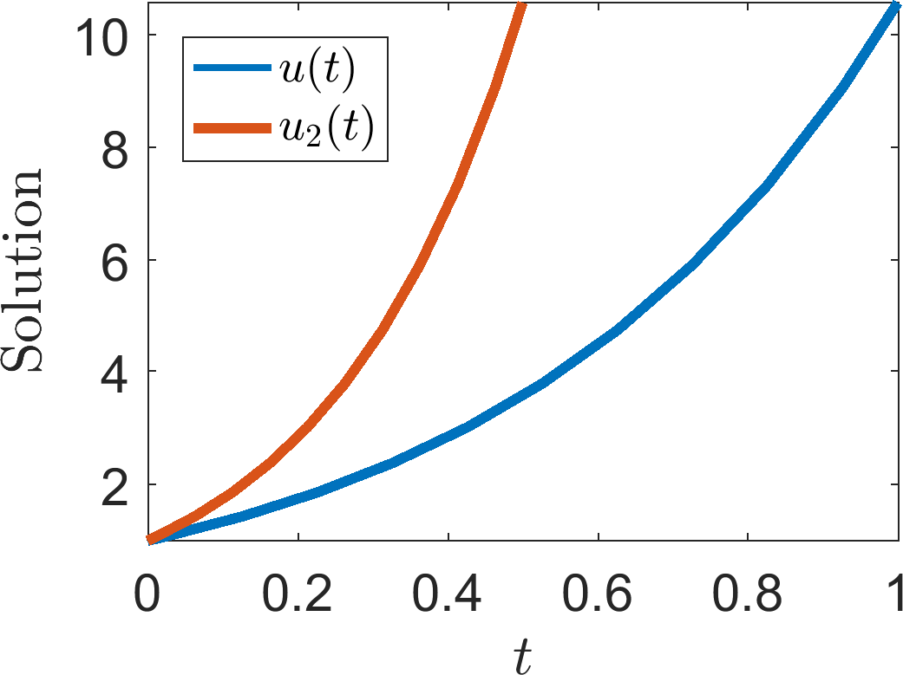
Two simulations of equation (3.7) with parameter values \(k_0=k_1=k_2=1\) (blue line, \(u(t)\)) and \(k_0=k_1=k_2=2\) (red line, \(u_2(t)\)). Illustrating that the evolution of the red line is the same as the blue line, except that the red line evolution occurs twice as fast, as predicted by equation (3.9).
Example 3.1.17: Non-uniqueness
To illustrate the non-uniqueness of non-dimensionalisation we rerun example 3.1.16 but this time we balance the time derivative, the constant term and the initial condition,
We quickly find that
thus, \([t]=u_0/k_0\). We can divide the equation through by \(k_0\), because we know that this is the balance of the first two terms in equation (3.10). Thus, we derive
which would be rewritten as
where
Both forms of the non-dimensionalised equation, (3.8) and (3.11), are perfectly valid. The most useful form will depend on what factor dominates the equation. If \(k_0\) is small and \(k_1\) is big (relative to one another) then equation (3.8) would be more useful as \(\alpha\approx0\) and we would be able to manipulate the equation to provide more information. Alternatively, if \(k_0\) was big and \(k_2\), or \(k_1\), was small then, equation (3.11) would be more useful as we would, again, be able to remove one of the constants based on this assumption.
Example 3.1.18: Failure
As mentioned not all balances are valid, which is what we will see in this example. Consider the following ODE system
There are three variables \(u\), \(v\) and \(t\) and so we need three balances. The chosen balances are illustrated on the equations using arrows. Extracting information from the balances we find that
From this point we quickly discover that
Since, generally, \(k_1\neq k_4\) we cannot satisfy both balances, thus, we must consider a different non-dimensionalisation.
One possible valid non-dimensionalisation is
See the board for details.
Although each case of non-dimensionalisation is different, the algorithm you should follow is the same in each case. The steps are:
write down the variables in the equations; this tells you how many balances you need;
specify balances and check that they are valid;
define non-dimensional scales that allow you to minimise the number of free parameters;
substitute the scales into the equations and collect together the remaining parameters into the smallest possible groups and give them a new variable name (DO NOT FORGET to do the same thing for the initial conditions. Everyone always forgets to do the initial conditions);
demonstrate that the scales you have derived have the correct dimension;
demonstrate that the new parameter groupings are dimensionless.
Although we have not completed the last two points for every example, you will be expected to do every step in an exam.
3.2 Check list
By the end of this chapter you should be able to:
non-dimensionalise a system of equations using direct substitution, or the arrow method;
demonstrate that the derived scales have the correct dimension;
demonstrate that remaining parameter groupings are non-dimensional;
4 Stationary states and stability
Now that we are able to model and simplify a physical system, we want to predict what the equations will do without having to simulate the system each time. Specifically, we are not interested in the transient initial behaviour of the equations; we want to understand what the trajectories will look like far into the future. In one dimension we have proven that the equations must either monotonically increase, decrease, or tend to a fixed value. In two dimensions we have the additional complications of persistent oscillatory dynamics. In higher dimensions we have the further option of chaotic systems, which are outside the scope of this course. However, even by restricting ourselves to one and two dimensions, how do we know what will happen? To enable us to generate these insights we first need two important definitions.
Definition 14
A state, \(\boldsymbol{u}_s\), is a steady state or stationary state of the ODE system
if it satisfies \(\boldsymbol{F}(\boldsymbol{u}_s)=0\).
This definition simply states that if the ODE system ever reaches \(\boldsymbol{u}_s\) then the system will not evolve further because all of the dynamics are in equilibrium. This is a useful concept, but currently incomplete.
For example, you can (theoretically) stand a pencil on its tip and it would remain stationary, if it were not perturbed (see Figure 4.1). Hence, this is a stationary state orientation of the pencil. However, it would require only a very small perturbation to cause the pencil to fall over and, thus, transition from the state of being on its point to being on its side (see Figure 4.1). Given a large enough perturbation (i.e. picking the pencil up) you could reset the pencil to the previous state of standing on its point. However, it requires a larger perturbation to reset the pencil than it does to knock it over and, so, we see that although these states are both stationary states they are somehow fundamentally different. This difference comes down to the intuitive concept of ‘stability’.
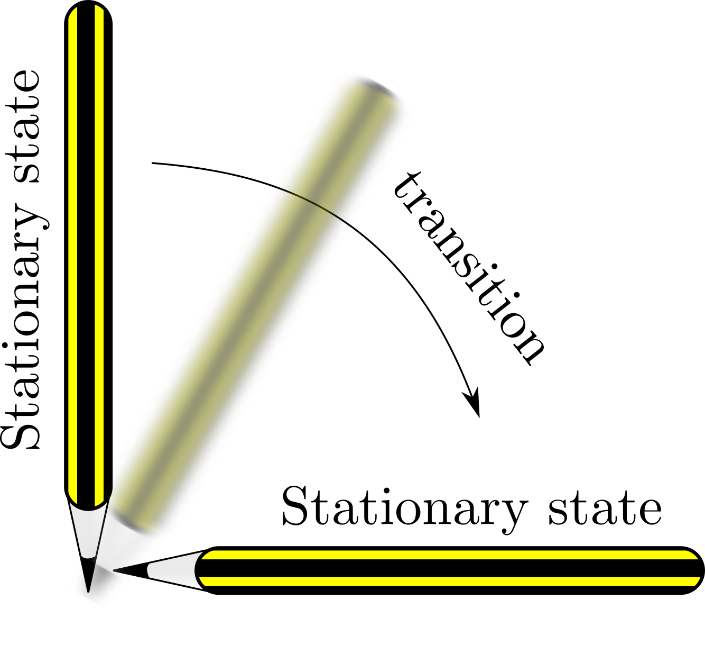
Stationary states of a pencil.
Definition 15
A steady state, \(\boldsymbol{u}_s\), of the ODE system
is stable if for all \(\epsilon >0\), there exists a \(\delta > 0\) and a \(t_0>0\) such that whenever \(|\boldsymbol{u}(t)-\boldsymbol{u}_s|< \delta\) then \(|\boldsymbol{u}(t)-\boldsymbol{u}_s|<\epsilon\) for all \(t \ge t_0\). Otherwise the steady state is unstable.
Simply put, this means that a state, \(\boldsymbol{u}_s\), is stable if whenever a solution \(\boldsymbol{u}(t)\) comes close enough to it then the solution tends to the state i.e. \(\boldsymbol{u}(t)\rightarrow\boldsymbol{u}_s\). In the example of the pencil, both the vertical and horizontal orientations of the pencil are stationary states. However, only the horizontal orientation is stable.
Example 4.0.19: Balls on surfaces
Consider Figure 4.2. Using your intuition, state which of the balls are stationary and which are stable, assuming that the surface that they are moving on has a small amount of friction.
Stationary and stable. This ball is ‘globally’ stable; namely, no matter how big a perturbation is given, the ball will always end up at the bottom of the well. Note that if the surface had no friction the ball will oscillate to and fro forever.
Stationary and unstable. The surface is only flat at one point, thus, any perturbation will cause the ball to slide away from the central point.
Non-stationary and, thus, cannot be categorised as stable, or unstable. The surface is not locally flat anywhere, so the ball simply keeps moving.
Stationary and stable. However, this ball is only ‘locally’ stable (compare with (a)). A big enough perturbation will cause the ball to exit the stability region and not return back to the stationary state.
Stationary and unstable. This case is similar to (b).
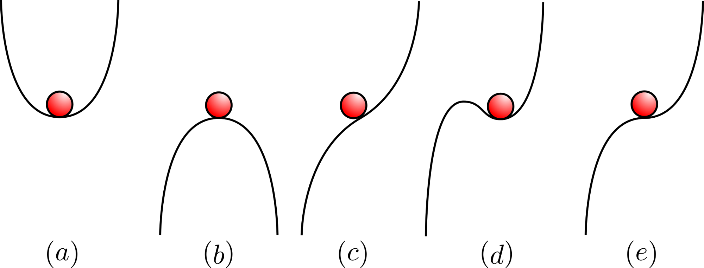
Which balls are stationary and stable?
Moving beyond the case of categorising drawings let us consider the specific mathematical example of the logistic equation.
Example 4.0.20: Stationary states and stability of the logistic equation
The non-dimensionalised logistic equation is (as we have seen before)
Firstly, we calculate the steady states by setting \(\dot{u}=0\). Trivially, we can see that the steady states are \(u=0\) and \(1\). Later, we will see how to derive the stability of a general system analytically. Here, we will develop our curve sketching techniques; specifically, plot equation (4.3) in the \((u,\dot{u})\) coordinate plane (see Figure 4.3(a)).
In the top half plane \(\dot{u}>0\) and, thus, \(u\) increases over time. Equally, in the bottom half plane \(\dot{u}<0\) and \(u\) decreases over time. Drawing arrows on Figure 4.3(a) to illustrate these facts demonstrates that \(u=0\) is unstable as trajectories diverge away from it, whilst \(u=1\) is stable as trajectories tend to this state. The insights gained from Figure 4.3(a) are confirmed in Figure 4.3(b), where, from simulating multiple initial conditions, we see that any small (positive) perturbation away from zero causes the solution to converge to \(u=1\), eventually. Equally, any initial condition \(u>1\) decreases monotonically towards \(u=1\), too.

(a)
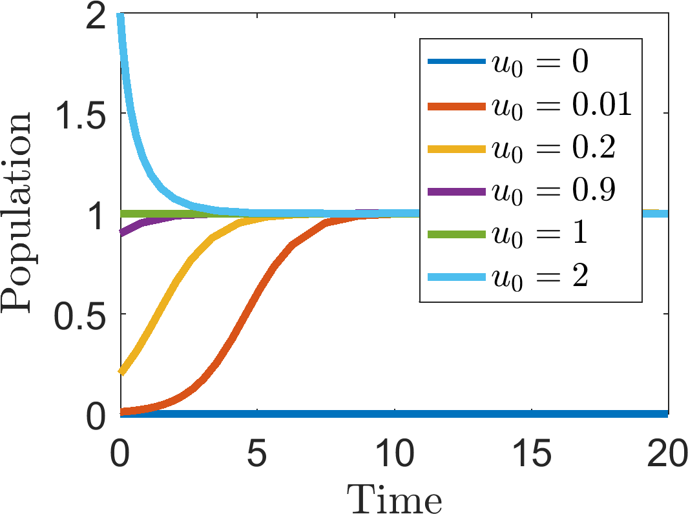
(b)
Illustrating the stationary states and stability characteristics of the logistic equation (4.3). (a) A plot of the curve in \((u,\dot{u})\) coordinates. (b) Multiple simulations of equation (4.3) with different initial conditions, \(u_0\), noted in the legend.
As we saw in example 4.0.20, when working with a single dependent variable, \(u\), all of the stationary and stability information can be gained from plotting the ‘phase plane’, i.e. the \((u,\dot{u})\) coordinate system. Specifically, the stationary states are given where the curve crosses the ‘\(x\)-axis’ (i.e. \(\dot{u}=0\)) and the stability of the states can be given by considering where the system is increasing or decreasing in the vicinity of the stationary point (i.e. the sign of \(\dot{u}\)).
However, drawings can be misleading and may not be possible if the function on the right-hand side of the differential equation is too complicated. Equally, drawing the curve will not work if the system has more than one variable. Thus, we need an analytical method to characterise the stability of a system, which can be generalised to higher order systems.
4.1 Linear stability
The crux of this method is to consider the dynamics of an ODE system near its stationary points. To do this we substitute a solution into the equations that is a perturbation about the steady state. Using Taylor series we expand the system in terms of the perturbation and keep only the linear terms as we are assuming that the perturbation is small. Since the system is now linear we can solve the approximate equations completely and, thus, they will tell us what dynamics to expect close to the steady states.
Theorem 4.1.1
Suppose \(u_s\) is a steady state of the one-dimensional ODE,
then \(u_s\) is linearly stable if \(\mathrm{d}F(u_s)/\mathrm{d}u<0\) and linearly unstable if \(\mathrm{d}F(u_s)/\mathrm{d}u>0\).
Proof
Consider a solution of the form \(u(t)=u_s+\epsilon(t)\), where \(|\epsilon(0)| \ll 1\). Substituting the perturbed solution into equation (4.4), we find that
We now use Taylor’s theorem on the right-hand side to derive the approximation
Ignoring all terms except the linear order in \(\epsilon\) we conclude that initially
By assumption \(u_s\) is a stationary point and, thus, by definition, \(F(u_s)=0\). Hence, approximately,
Equation (4.8) is trivially solvable since \(\mathrm{d}F(u_s)/\mathrm{d}u\) is a constant,
The exponential solution form tells us that if \(\mathrm{d}F(u_s)/\mathrm{d}u<0\) then \(\epsilon(t)\rightarrow 0\) as \(t\rightarrow \infty\). This means that our small perturbation dies out over time and the solution \(u(t)\rightarrow u_s\) as \(t\rightarrow \infty\). In other words \(u_s\) is stable because solutions that are slightly perturbed away from \(u_s\) tend to evolve back to \(u_s\).
Oppositely, if \(\mathrm{d}F(u_s)/\mathrm{d}u>0\) then \(\epsilon(t)\rightarrow \infty\) as \(t\rightarrow \infty\). Thus, the solution diverges away from \(u_s\) meaning that \(u_s\) is unstable.
We make a number of remarks about the theorem’s statement and proof:
the theorem makes no claim about the solution’s properties in the case that the first derivative \(\mathrm{d}F(u_s)/\mathrm{d}u=0\). In this specific case we would have to go to higher order in the Taylor expansion.
the proof does not specify the size of \(\epsilon\), thus, the steady state may be globally stable, in that all trajectories tend to \(u_s\). However, the proof only assures us of the local stability.
in the case that \(u_s\) is unstable we cannot conclude what happens to the trajectory. Specifically, although \(\epsilon\) will grow exponentially, this simply means that our approximation of small \(\epsilon\) is no longer valid. Indeed, a trajectory near an unstable point may grow without bound or, simply tend to one of the other stationary states in the system that are stable.
Example 4.1.21: Linearising around multiple steady states
Consider the following equation, which can be used to model harvesting, with constant effort, \(E>0\), of a population, \(u\),
The steady states are solutions to
and, so,
Name these states \(u_0\), \(u_-\) and \(u_+\) in the obvious way. Since we are dealing with a real system we must ensure that the steady states are also real. Namely, the states \(u_\pm\) only exist when \(0<E\leq 1\); if \(E>1\) only \(u_0\) exists. Finally, \(u_\pm>0\) for all values of \(0<E\leq 1\).
Now let us consider the derivative of \(f\) in order to prescribe stability
We now check each steady state separately. Since
we immediately conclude that \(u_0\) is a linearly stable stationary state. Similarly,
Thus, we have to contend with showing whether \(f'(u_+)\) is positive, or negative, and how that depends on \(E\). Firstly, we note that \(\left(1+\sqrt{-E^2+1} \right)^2\) is always positive, so it is only the numerator that could change sign. Equally, by definition \(u_+\) only exists if \(0<E<1\), thus we can also eliminate the factor of \(E\) at the front of the equation. Hence, we reduce the stability problem to determining the sign of
Since \(0<E<1\) then both \((E^2-2)\) and \((E^2-1)\) are negative, hence \(f'(u_+)<0\), and, so, \(u_+\) is stable. Similarly
Unfortunately, this case is not so clear cut, because \(\left(2-E^2\right)>0\), but \((E^2-1)<0\). We could continue investigating the properties of the curve
but this is not so easy. Instead, we consider \(f'(u_-)\) without substituting in the value of equation (4.12). Further, we note that by rearranging equation (4.11) \(u_-\) is a solution of
Thus,
As mentioned above \(u_->0\), thus, the sign of \(f'(u_-)\) depends solely on the sign of
where, in the last line we have defined \(a=1-E^2\). Now, since \(0<E<1\) then \(0<a<1\), and, so, \(a<\sqrt{a}\), hence \(E-u_->0\), resulting in the discovery that \(f'(u_-)>0\) for all \(E\), meaning that \(u_-\) is unstable.
In summary \(u_0\) is always stable. The steady states \(u_\pm\) only exist when \(0<E<1\) and whenever they do exist \(u_+\) is linearly stable, whilst \(u_-\) is unstable.
Of course, we could have seen this much more easily if we had simply plotted \(f(u)\) as shown in Figure 4.4. Figure 4.4 also provides us with the information of which initial conditions will go to which steady state. Specifically, in the case that \(0<E<1\), if \(u(0)<u_-\) then the population will tend to zero, whilst if \(u(0)>u_-\) the population will tend to \(u_+\). Equally, we see that in the case when \(E>1\) all populations tend to zero.
Although the graphical method is easier to use in this case, we may have missed certain cases if we had just drawn one graph. Equally, we have the explicit existence bounds on \(u_\pm\). Finally, the derivative method presented in Theorem 4.1.1 is more easily extended to higher dimensions, as we will see later.
The interpretation of these results provides serious implications on the viability of a harvested population. Namely, if we are greedy and harvest too much of the population (\(E>1\)) then the population will go extinct. Moreover, even if \(0<E<1\) and, so, sustainable harvesting is possible, we still have to ensure that the population is large enough to take the impact. Namely, since \(u_0\) is stable, then a small population will die out, no matter how small the harvesting effort is. Critically, only in the no harvesting case \(E=0\) are we guaranteed to have a surviving population.
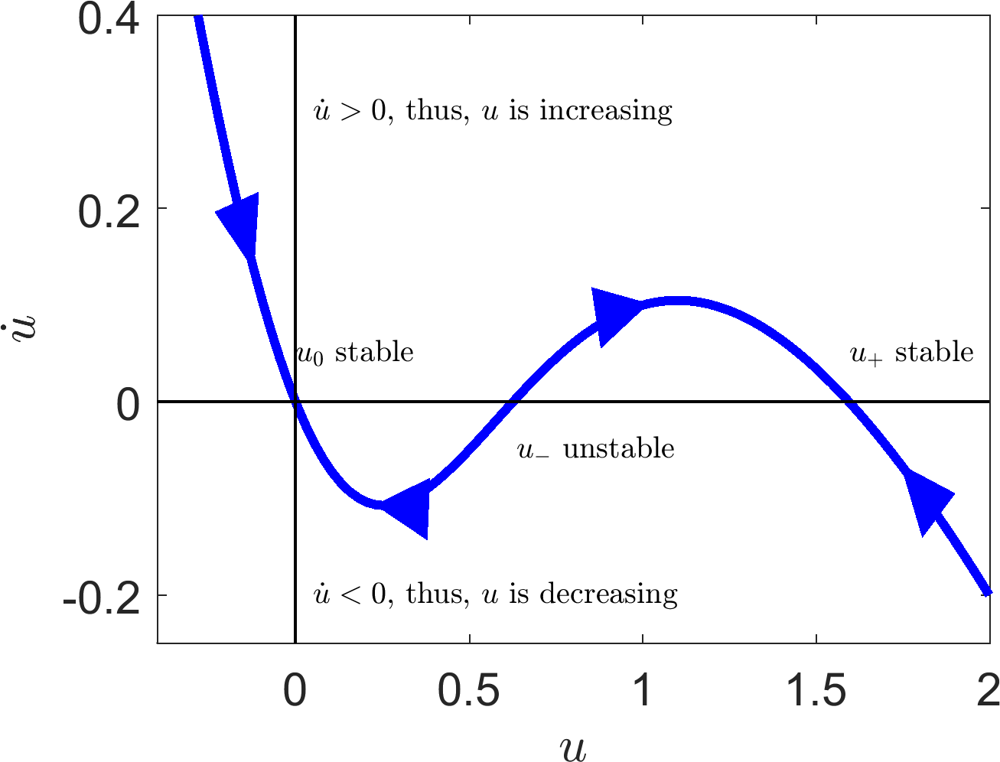
(a) \(E=0.9\)
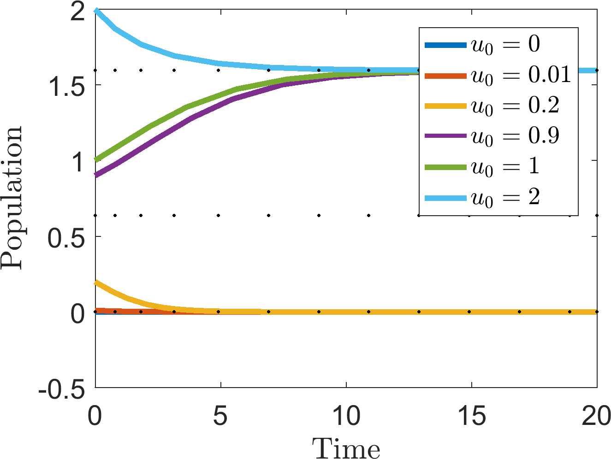
(b) \(E=0.9\)
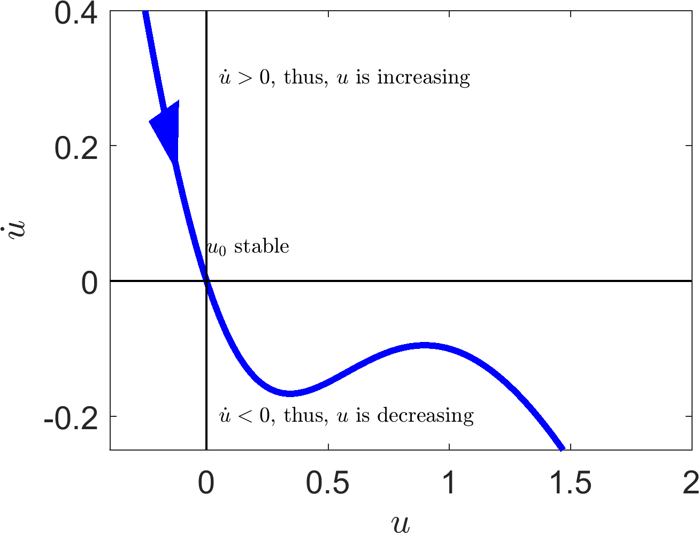
(c) \(E=1.1\)
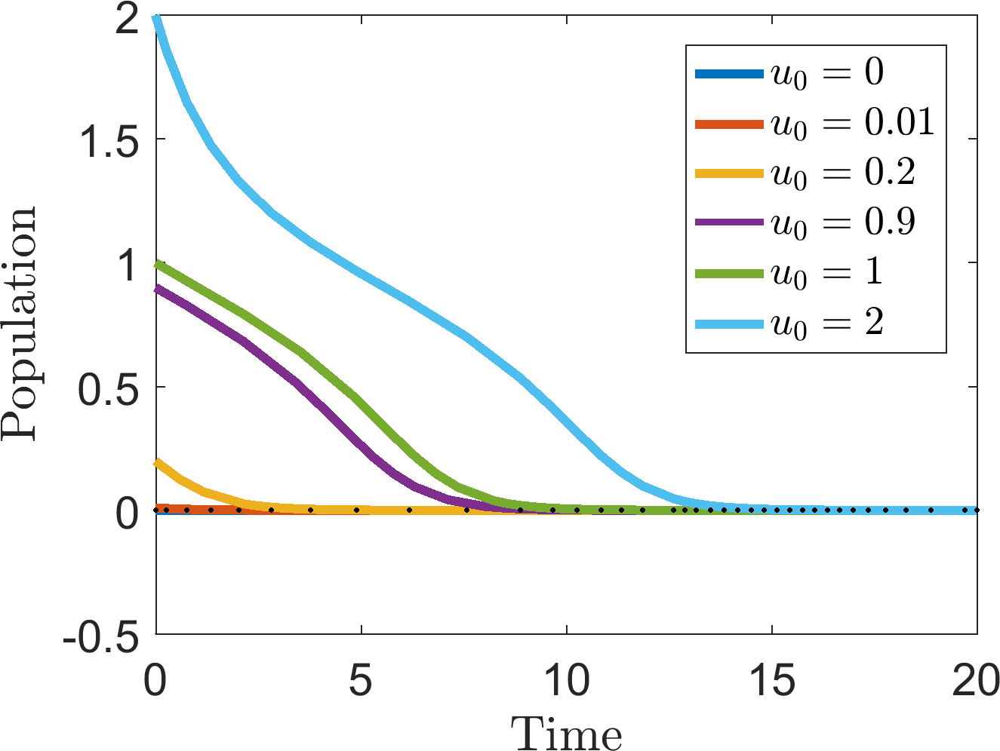
(d) \(E=1.1\)
Illustrating the stationary states and stability characteristics of equation (4.10). Top row: case when \(E=0.9\) and three steady states exist. (a) A plot of the curve in \((u,\dot{u})\) coordinates. (b) Multiple simulations of equation (4.10) with different initial conditions, \(u_0\), noted in the legend. Bottom row: case when \(E=1.1\) and only \(u_0=0\) is a stationary state. (a) A plot of the curve in \((u,\dot{u})\) coordinates. (b) Multiple simulations of equation (4.10) with different initial conditions, \(u_0\), noted in the legend.
4.2 Bifurcations and hysteresis
As seen in example 4.1.21 the existence and stability of steady states can depend on model parameters, here \(E\).
Definition 16
A bifurcation point of a system is a parameter value at which the characteristics of the steady states change. This can be either in the number of steady states or in their stability.
In example 4.1.21, \(E=1\) is a bifurcation point of the system.
The amount of information gained in example 4.1.21 can be quite overwhelming. Thus, we use a bifurcation diagram to illustrate the complexity in a simple way. Specifically, Figure 4.5 shows equation (4.12) as a function of \(E\) and captures the following features:
\(u_0\) always exists;
\(u_\pm\) exist whenever \(E<1\);
\(u_0\) and \(u_+\) are stable when they exist;
\(u_-\) is always unstable when it exists.
Figure 4.5 can also be used to tell us what happens in the case when we think about varying \(E\) and how it can have unexpected impacts on the system. Consider the case where we are happily fishing in a lake, which can be modelled by equation (4.10), such that \(E=0.7\) and, so the level of fish in the lake is stable at around \(u_+(0.7)\approx 2\) (taken from Figure 4.55).
Suppose we become greedy and increase our effort, thus pushing \(E\) to 1.1. The population begins to die out rapidly, due to overfishing. Critically, we notice the huge reduction in population size and reduce our effort to the previous stable case, \(E=0\). Unfortunately, we have left it too late and the population has reduced past \(u_-(0.7)\), thus, even though a fish population still exists and our harvesting rate \(E<1\), the population will still die. This is an example of hysteresis.
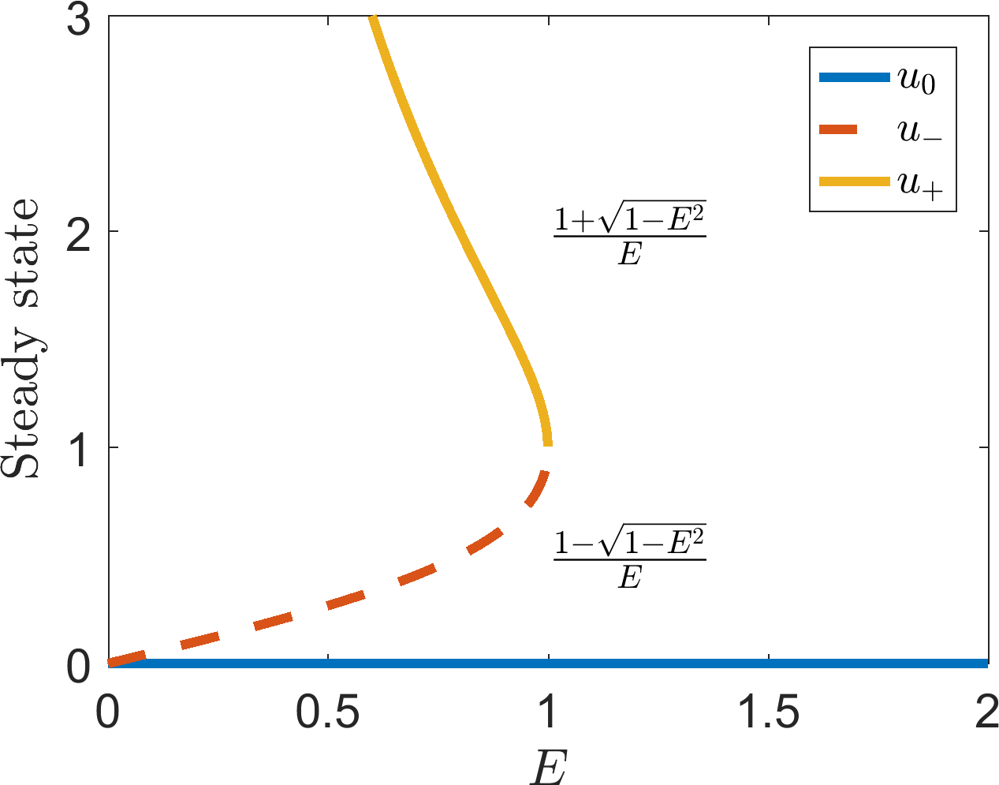
Bifurcation plot of equation (4.10). The dependence of the existence and stability of \(u_0\), \(u_-\) and \(u_+\) on \(E\) is plotted. The \(u_-\) is dashed to illustrate that the steady states are always unstable, whilst \(u_0\) and \(u_+\) are stable wherever they exist. However, the steady states, \(u_\pm\), disappear for \(E>1\).
Definition 17
A system exhibits hysteresis if, when a parameter of the system is altered and subsequently returned to the initial value, the system does not return to its original state.
Example 4.1.21 and Figure 4.5 demonstrate a simple way of showing a system exhibits hysteresis. Specifically, you should:
derive the steady states and their dependence on any given parameters;
derive the stability of the steady states and their dependence on any given parameters;
note any bifurcation points of the parameters;
define and illustrate the characteristics of the system before and after the bifurcation point;
consider the system before the bifurcation point;
identify what happens to the system as the parameter increases past its bifurcation point;
identify what happens to the system as the parameter is reduced to its initial value;
if the system state in point 17 is the same as 17 then the system does not exhibit hysteresis. Otherwise hysteresis is present in the system.
4.3 Check list
By the end of this chapter you should be able to:
derive the steady states of a system;
categorise the stability of the steady states using graphical means;
prove that the stability of a steady state depends on the sign of the first derivative (with respect to the system variable) evaluated at the steady state;
analytically specify the parameter dependencies of the steady states and stability criteria;
identify bifurcation points;
plot the steady state curves in a bifurcation diagram;
identify whether a system could exhibit hysteresis.
5 Stability of ODE systems
In the last chapter we focused on systems of single variables. We now extend our stability theory to account for any number of variables.
First, we note that the definition of a steady state immediately generalises to any number of variables. Specifically, if we have \(n\) variables, \(\boldsymbol{u}=(u_1,\dots,u_n)\) then there must be \(n\) ODEs, \(\boldsymbol{F}(\boldsymbol{u})=(F_1(u_1,\dots,u_n),\dots,F_n(u_1,\dots,u_n))\), one for each variable, in order for the system to be uniquely defined. Thus, the steady states, \(\boldsymbol{u}_s\), are found from solving \(\boldsymbol{F}(\boldsymbol{u}_s)=0\). The derivation of linear stability similarly extends to higher dimensions; however, we need to first define the Jacobian.
Definition 18
The Jacobian, \(\boldsymbol{J}\), of an ODE system,
is the matrix of partial derivatives of each function, with respect to each argument,
For brevity, it is common practice to write a partial derivative as a subscript, i.e.
Equally, unless otherwise specified, we assume that the Jacobian is evaluated at the steady state.
Theorem 5.0.1
Suppose \(\boldsymbol{u}_s\) is a steady state of the ODE system
where \(F\) is continuously differentiable everywhere in all of its arguments and the Jacobian is locally invertible. The linear stability of \(\boldsymbol{u}_s\) will depend on the eigenvalues of the Jacobian.
Proof
The proof follows exactly the same strategy as Theorem 4.1.1. Specifically, because differentiation is linear, you can use the exact same proof, but with tensors, rather than scalars. Namely, consider the perturbed solution \(\boldsymbol{u}(t)=\boldsymbol{u}_s+\boldsymbol{\epsilon}(t)\), where \(||\boldsymbol{\epsilon}(0)|| \ll 1\). Substituting the perturbed solution into equation (5.4), we find that
We now use a multi-variable form of Taylor’s theorem on the right-hand side to derive the approximation
To make progress, we assume \(\boldsymbol{J}\) is invertible, and, thus, diagonalisable. Critically, this means that we can find a complete set of eigenvectors, \(\{\boldsymbol{\nu}_1,\dots,\boldsymbol{\nu}_n\}\), and eigenvalues, \(\{\lambda_1,\dots,\lambda\}\), such that \(\boldsymbol{J}\) can be written as \(\boldsymbol{J}=\boldsymbol{U}\boldsymbol{D}\boldsymbol{U}^{-1}\), where \(\boldsymbol{D}\) is a diagonal matrix with the eigenvalues along the diagonal, \(\boldsymbol{U}\) is a matrix with the respective eigenvectors as the columns and \(\boldsymbol{U}^{-1}\) is the inverse of \(\boldsymbol{U}\). Substituting this form of \(\boldsymbol{J}\) into equation (5.6) produces
The matrix \(\boldsymbol{U}^{-1}\) is constant so we can take it within the time derivative on the left-hand side. Hence, defining \(\boldsymbol{\eta}=\boldsymbol{U}^{-1}\boldsymbol{\epsilon}\), we derive
The closed form solution of equation (5.9) is
where \(\boldsymbol{a}_i\) are defined by the initial conditions. Thus, the stability of \(\boldsymbol{\eta}\), and, hence, \(\boldsymbol{\epsilon}\) depends on the eigenvalues, \(\{\lambda_1,\dots,\lambda_n\}\).
Critically, now we are in higher dimensions, the eigenvalues can have complex values. If we let \(\lambda_i=\alpha_i+\beta_iI\) then
Thus, the real parts of the eigenvalues determine the growth rate, whilst the imaginary part determines the frequency of oscillation in time. Namely, if all eigenvalues have negative real parts the small perturbations die out. However, if there is at least one eigenvalue with positive real part then the perturbations will grow and the steady state is not stable.
5.1 Steady state classification of two-dimensional systems
In the last section we demonstrated that the stability of the steady states depends on the eigenvalues of the Jacobian. In this section, we restrict ourselves to considering two-dimensional systems only and illustrate that all steady states can be defined to fit a small number of categories.
The following derivation is going to be an explicit form of the proof shown in the last section. The reason for this is that the condensed vector form of proof is less transparent and it is always good to see a full sprawling derivation to illustrate the subtleties. Critically, although you may be specifically required to reproduce the proof, in a specific case you can generally just calculate the Jacobian straight away and not bother with the initial linearisation steps.
Consider the general two-dimensional system
Let \((u_s,v_s)\) be a steady state, i.e. \(f(u_s,v_s)=g(u_s,v_s)=0\). Linearising around the steady state with \(u=u_s+\epsilon_1\) and \(v=v_s+\epsilon_2\) produces
and, similarly,
The eigenvalues will, thus, depend on the four parameters \((f_u,f_v,g_u,g_v)\). Note that we have not restricted the signs of these parameters. Thus, any of them could be positive or negative. Due to not knowing the signs of the derivatives we are unable to non-dimensionalise them out. However, in a specific example, this may be possible, thus, reducing down the number of free parameter groups in the steady state and stability conditions.
Combining equations (5.14) and (5.15) we derive
Thus, we are left to find the eigenvalues of
namely
where equations (5.18) and (5.19) are the same but equation (5.19) is rewritten in terms of the trace, ‘\(T=\mathrm{tr}(\boldsymbol{J})\)’, and determinant, ‘\(D=\det(\boldsymbol{J})\)’, of the Jacobian, \(\boldsymbol{J}\). Finally, the eigenvalues of \(\boldsymbol{J}\) have the form
We are now going to characterise the stability of the steady state through the dependence of \(\lambda_{\pm}\) on \(T\) and \(D\).
5.1.1 \(D<0\)
If \(D<0\) then \(\lambda_\pm\) are both real. Moreover \(T^2-4D>T^2\), thus \(\lambda_-<0<\lambda_+\). Since one of the eigenvalues has positive real part the steady state is unstable. More specifically, it is called a ‘saddle point’.
Definition 19
A steady state is a saddle point if not all of the real parts of the eigenvalues have the same sign.
For a more intuitive understanding such a steady state is called a saddle point because the trajectories want to converge along one direction and diverge along another (see Figure 5.1), i.e. the energy surface around the steady state is shaped like a saddle.
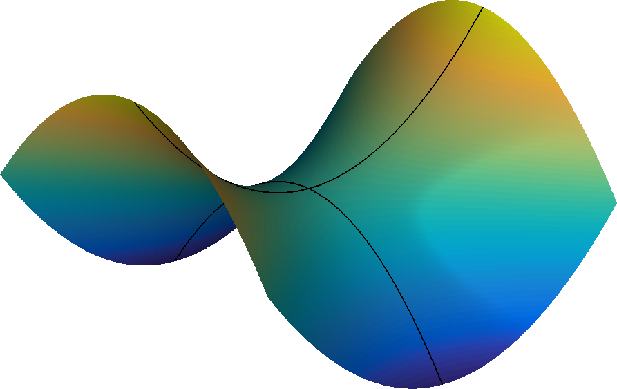
A saddle-shaped surface. If a marble is placed at the top of the surface its trajectory will initially tend to the centre, before diverging to infinity.
Example 5.1.22: Saddle point
Consider the system
The unique steady state is \((u,v)=(0,0)\). The Jacobian is
If a matrix is upper (or lower) triangular then the diagonal elements are the eigenvalues, thus, we clearly see that \(\lambda_-=-1<0<1=\lambda_+\). Figure 5.2 illustrates solutions of the equations for multiple initial conditions. We observe that in all cases one of the coordinates converges to a fixed value, whilst the other grows without bound. For example, the yellow trajectory has initial condition \((u_0,v_0)=(1/2,-1/2)\). In the left image of Figure 5.2 the yellow curve diverges, whilst it converges to zero in the central image, i.e. \((u,v)\rightarrow(\infty,0)\).
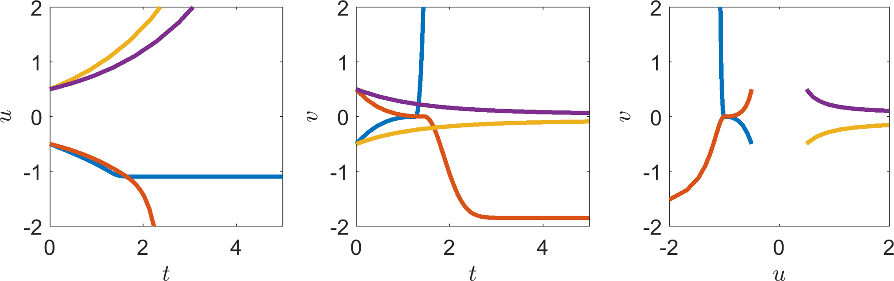
Saddle point system trajectories, solutions of equations (5.21) and (5.22). Left: plot of \((u,t)\) for different initial conditions. Middle: plot of \((v,t)\) for different initial conditions. Right: plot of \((u,v)\) combining the solutions from the left and middle plots. Trajectories from the same initial conditions have the same line colour across all three figures. All trajectories have at least one coordinate that grows without bound.
5.1.2 \(D>0\)
If \(D>0\) then the eigenvalues may be real or imaginary. However, what is certain is \(T^2-4D<T^2\). Thus the sign of the real part of the eigenvalue depends on the sign of \(T\). Hence, we break this subsection up into two further cases.
5.1.2.1 \(T=0\)
If \(T=0\) then the eigenvalues are purely imaginary, \(\textrm{Re}(\lambda_-)= \textrm{Re}(\lambda_+)=0\). This means that the linear analysis suggests that the trajectories are neither growing nor shrinking; the trajectories simply oscillate around the steady state. Such points are called centre points.
Note that this is a marginal case and higher order terms may still cause the system to converge or diverge, but slowly, thus, although the linear analysis says that the trajectory simply oscillates we should go to higher orders to check, but this is outside the scope of this course.
Example 5.1.23: Centre point
Consider the system
The unique steady state is \((u,v)=(0,0)\). The Jacobian is
The eigenvalues are \(\lambda_\pm=\pm I\). Figure 5.2 illustrates solutions of the equations for multiple initial conditions. We observe that trajectories close enough to \((0,0)\) produce closed oscillatory orbits. However, further away from zero, the trajectories diverge.
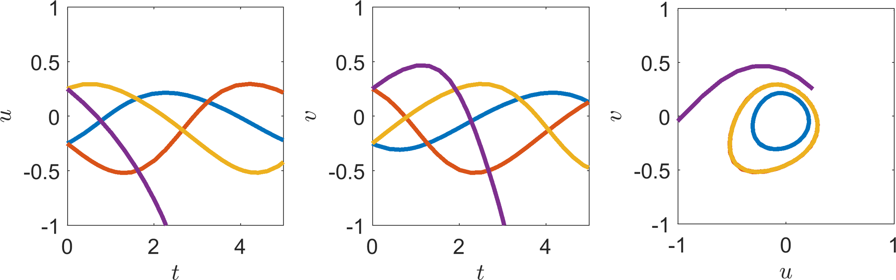
Stable system trajectories, solutions of equations (5.24) and (5.25). Left: plot of \((u,t)\) for different initial conditions. Middle: plot of \((v,t)\) for different initial conditions. Right: plot of \((u,v)\) combining the solutions from the left and middle plots. Trajectories from the same initial conditions have the same line colour across all three figures.
Example 5.1.23 demonstrates well that our analysis is only valid near the steady state. Namely, three out of the four initial conditions appear to form closed loops that oscillate around (0,0) (see the right image of Figure 5.3). However, one of the initial conditions diverges away.
5.1.2.2 \(T<0\)
If \(T<0\) then \(\textrm{Re}(\lambda_-)\leq \textrm{Re}(\lambda_+)<0\) and, so, all eigenvalues have negative real part, meaning that the steady state is stable. This case can further be sub-divided depending on the sign of \(T^2-4D\). Namely, if \(T^2-4D>0\) the steady state is a stable node whilst if \(T^2-4D<0\) the steady state is a stable spiral.
Example 5.1.24: Stable node
Consider the system
The unique steady state is \((u,v)=(0,0)\). The Jacobian is
The eigenvalues are \(\lambda_\pm=-1<0\). Figure 5.2 illustrates solutions of the equations for multiple initial conditions. We observe that in all cases the trajectories converge to (0,0).
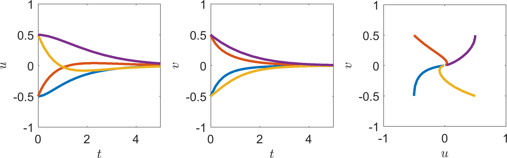
Stable system trajectories, solutions of equations (5.27) and (5.28). Left: plot of \((u,t)\) for different initial conditions. Middle: plot of \((v,t)\) for different initial conditions. Right: plot of \((u,v)\) combining the solutions from the left and middle plots. Trajectories from the same initial conditions have the same line colour across all three figures. All trajectories converge to (0,0).
Example 5.1.25: Stable spiral
Consider the system
The unique steady state is \((u,v)=(0,0)\). The Jacobian is
The eigenvalues are \(\lambda_\pm=-1/4\pm \sqrt{7}/4I\). Figure 5.5 illustrates solutions of the equations for multiple initial conditions. We observe that in all cases the trajectories converge to (0,0), whilst spiralling.
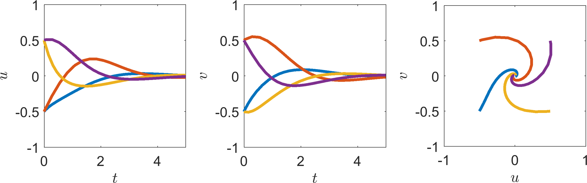
Saddle point system trajectories, solutions of equations (5.27) and (5.28). Left: plot of \((u,t)\) for different initial conditions. Middle: plot of \((v,t)\) for different initial conditions. Right: plot of \((u,v)\) combining the solutions from the left and middle plots. Trajectories from the same initial conditions have the same line colour across all three figures. All trajectories converge to (0,0).
5.1.2.3 \(T>0\)
Opposite to the previous case \(0<\textrm{Re}(\lambda_-)\leq \textrm{Re}(\lambda_+)\) and, so, all eigenvalues have positive real part, meaning that the steady state is unstable. Similar to the previous naming convention, if \(T^2-4D>0\) the steady state is an unstable node whilst if \(T^2-4D<0\) the steady state is an unstable spiral.
Example 5.1.26: Unstable node
Consider the system
The unique steady state is \((u,v)=(0,0)\). The Jacobian is
The eigenvalues are \(0<\lambda_-=1/2<\lambda_+=1\). Figure 5.6 illustrates solutions of the equations for multiple initial conditions. We observe that in all cases the trajectories diverge away from (0,0).
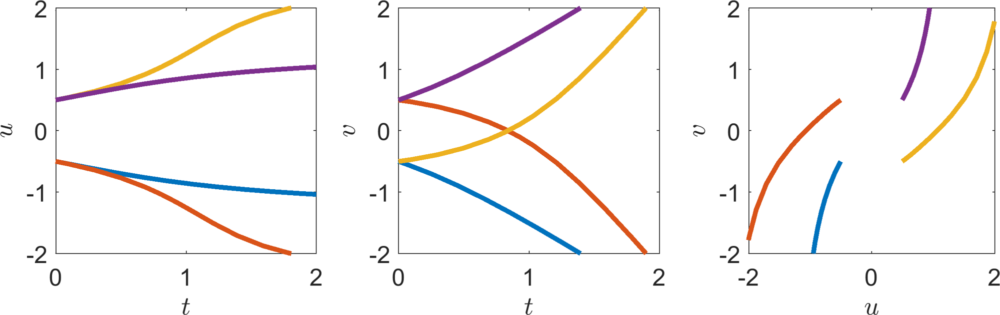
Unstable system trajectories, solutions of equations (5.33) and (5.34). Left: plot of \((u,t)\) for different initial conditions. Middle: plot of \((v,t)\) for different initial conditions. Right: plot of \((u,v)\) combining the solutions from the left and middle plots. Trajectories from the same initial conditions have the same line colour across all three figures. All trajectories diverge away from (0,0).
Example 5.1.27: Unstable spiral
Consider the system
The unique steady state is \((u,v)=(0,0)\). The Jacobian is
The eigenvalues are \(\lambda_\pm=3/4\pm \sqrt{15}I/4\). Figure 5.5 illustrates solutions of the equations for multiple initial conditions. We observe that in all cases the trajectories diverge away from (0,0), whilst spiralling clockwise.
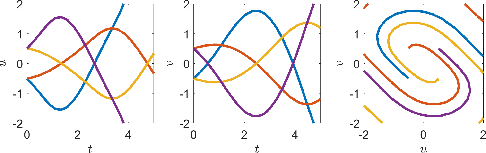
Unstable spiral system trajectories, solutions of equations (5.36) and (5.37). Left: plot of \((u,t)\) for different initial conditions. Middle: plot of \((v,t)\) for different initial conditions. Right: plot of \((u,v)\) combining the solutions from the left and middle plots. Trajectories from the same initial conditions have the same line colour across all three figures. All trajectories diverge away from (0,0).
5.2 Comments
Note that we do not consider the marginal cases \(D=0\) or \(T^2=4D\). This is because these cases need to be approached on a case-by-case basis, because it is the non-linear terms which may dominate the kinetics. Even in the case \(T=0\), where we generate centre points, we have seen that the analysis breaks down when the initial condition is too far away from the steady state.
All of the above definitions can be encompassed in a single diagram of the \((T,D)\) plane (see Figure 5.8). Critically, although Figure 5.8 is useful, it is suggested that instead of calculating the trace and determinant of the Jacobian and figuring out where in the stability diagram you lie, you calculate the eigenvalues of any system explicitly.

Stability diagram in terms of the trace and determinant of the Jacobian.
5.3 Check list
By the end of this chapter you should be able to:
derive the steady states of an ODE system;
prove that the stability of a steady state depends on the eigenvalues of the Jacobian of a system;
explicitly derive the eigenvalues of the Jacobian of a two-species system;
use the eigenvalues to characterise steady states in terms of whether they are centres, (un)stable nodes, (un)stable spirals or saddle points.
6 Phase plane analysis
In the last chapter we considered ODE systems with only a single steady state. Even though we are going to restrict ourselves to two-dimensional ODE systems, such systems can have many non-trivial steady states. We need to be able to combine such information to give an idea of what the global dynamics will be, even though we only have local analysis.
This will be a graphical method and in some ways provides a two-dimensional extension to the methods seen in Chapter 4. Specifically, in Chapter 4 we could understand the entire dynamics of the system in the \((u,\dot{u})\) plane; when we have two variables, we consider the \((u,v)\) plane instead, which is known as a ‘phase plane’. To construct a phase plane, instead of considering a single trajectory as in the \((t,u)\) simulation, we consider the motion of a trajectory across all points in the \((u,v)\) space. To aid in our understanding we introduce a new concept.
Definition 20
Consider an ODE system
where \(\boldsymbol{F}(\boldsymbol{u})=(F_1(u_1,\dots,u_n),\dots,F_n(u_1,\dots,u_n))\). The nullclines are the curves defined by
for all \(i=1,\dots,n\).
Nullclines are a useful concept because on each separate curve the dynamics of at least one variable are stationary, thus, the direction across a nullcline is simplified. Moreover, if all nullclines meet at a given point, all dynamics must be stationary, i.e. by definition all nullclines meet at steady states.
Example 6.0.28: Nullclines
Consider the system
in the half plane \(u>0\).
The steady states of this would satisfy
which has no closed form solution. We could estimate the solutions using a numerical root finding algorithm. However, by plotting the nullclines,
in Figure 6.1, we immediately see there are exactly two steady states.

Consider a general nullcline, for example \(\dot{u}=0\). This line must delineate the regions where the derivative is positive and negative. Namely, on one side of the line \(\dot{u}>0\), whilst on the other \(\dot{u}<0\). The same can be said of the \(\dot{v}=0\) nullcline. Thus, the nullclines segment the \((u,v)\) plane into regions of different dynamics. We return to example 6.0.28 with this knowledge and specify the signs of the derivatives in each region.
Example 6.0.29: Derivative signs
We first consider the \(\dot{u}\) nullcline
illustrated in Figure 6.2(a). Pick any point vertically higher than the curve, e.g. (2,10), and consider the sign of equation (6.3). Specifically, substituting this value in we get
Thus, above the curve \(\dot{u}>0\) and \(\dot{u}<0\) below the curve (see Figure 6.2(a)). Once we know the sign of the derivative in each section we can draw arrows to illustrate the local direction in which the trajectory will be heading. For example, in a region with \(\dot{u}>0\) the \(u\) coordinate will be increasing and, so, the arrowhead points to the right i.e. the direction of increasing \(u\).
We can do the same for the \(v\) regions. For example, consider the point \((5,0)\),
Hence, to the right of the \(v\) nullcline \(v\) is decreasing. By a similar process \(v\) is increasing to the left of the \(v\) nullcline (see Figure 6.2(b)).
We now combine this information in each region providing a sketch of how a trajectory will act anywhere in the plane. In addition we add arrows to the nullclines where we remember that there is no movement in the \(u\) direction on the \(u\) nullcline and no movement in the \(v\) direction along the \(v\) nullcline. Namely, the arrows are vertical and horizontal on the \(u\) and \(v\) nullclines, respectively. Equally, we pay explicit attention to which way these arrows are directed according to the surrounding information.
All of this information is plotted in Figure 6.2(c). Critically, in this case we are able to suggest what forms the steady states will have. The steady state on the left (approximately (1.6,0.5)) will be unstable because all of the arrows near to the steady state point away from the steady state. The steady state on the right (approximately, (3.8,1.3)) appears to be a saddle as arrows in the horizontal direction point towards the steady state, whilst arrows in the vertical direction point away from the state.
However, to ensure we are right we have to run the analysis. We will not do this here because the algebra gets very hairy and, as mentioned, you would need to use a numerical root finder to estimate the steady states to substitute into the Jacobian. If we do do this numerically we find that the eigenvalues of the left steady state are \(\lambda_\pm\approx 1.36\pm0.69I\), thus, the point is indeed unstable, but an unstable spiral, which we could not have predicted from the graph. The eigenvalues for the steady state on the right are \(\lambda_-\approx -2.43<0<0.92=\lambda_+\), hence the point is a saddle, justifying our diagram.
From this example we have seen that phase planes are helpful diagrams, which encapsulate lots of stability information. However, as illustrated in comparing the diagram with the actual analytical values of the eigenvalues it can be difficult to tell the difference between (un)stable nodes and (un)stable spirals. Equally, as we saw in the last chapter, sketches only provide the correct insight if you draw the system correctly. If there had been a parameter in this system that we could vary then there may have been a stability case, dependent on the parameter, that we would miss if we had only drawn one diagram. Thus, a phase plane should always be backed up with linear analysis. The linear analysis provides the local information, whilst the phase plane allows us to approximately see how all the dynamics fit together.
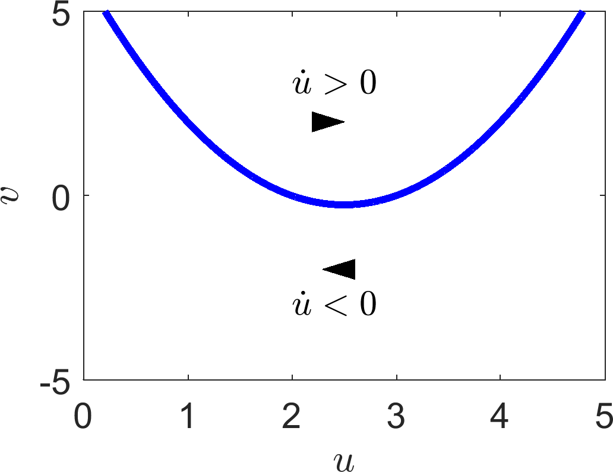
(a)

(b)

(c)

(d)
Specifying the signs of the derivatives on either side of the (a) \(\dot{u}\) and (b) \(\dot{v}\) nullcline. The arrowheads indicate the general direction that a trajectory will be heading. These results can then be combined into the direction plots seen in (c). Finally, in (d), we simulate a number of trajectories, which demonstrate that the arrows in (c) provide the correct general idea.
6.1 Check list
By the end of this chapter you should be able to:
define what a nullcline is;
understand the relationship between steady states and the points at which nullclines cross;
plot nullclines;
sketch arrows showing general trajectory directions on the phase plane;
interpret the stability of the steady states from the information plotted on a phase plane.
7 Putting it all together
Throughout this course we have learned how to construct an ODE system from an intuitive understanding of the dynamics (Chapter 2). From this point we simplify the system using non-dimensionalisation, which reduces the number of free parameters that we need to consider (Chapter 3). Having combined the system parameters into smaller groupings we are able to derive how the system’s steady states and stability rest on these parameters (chapters 4 and 5). Finally, we saw how to illustrate these local dependencies using a phase plane, in order to better understand the global phenomena (Chapter 6). In this chapter we combine all of these techniques and completely analyse a number of examples.
7.1 Fish example
Example 7.1.30: Fishing
Consider a lake with fish that attract fishermen. We wish to model the fish-fishermen interaction under the following assumptions:
in the absence of fishing the fish population growth is proportional to the current population, but is suppressed by binary competition;
the presence of fishermen suppresses the fish growth rate at a rate jointly proportional to the size of the fish and fishermen populations;
fishermen are attracted to the lake at a rate directly proportional to the number of fish in the lake;
binary competition between fishermen discourages fishermen.
7.1.1 Model the system
We convert these rules into interaction equations. Let \(F\) stand for fish and \(M\) stand for fishermen,
Next we use the Law of Mass Action to convert the interaction equations into ODEs,
7.1.2 Non-dimensionalise
We have three variables in this system: \(F\), \(M\) and \(t\), thus, we need three valid balances to define the system. We define our non-dimensionalised variables to be \(F=[F]u\), \(M=[M]v\) and \(t=[t]t'\), with the understanding that the bracketed variables are the dimensional part. Although there are many ways we could non-dimensionalise this system, we choose the following:
From these balances we immediately write down
which, in turn, provide the following scales
which can be substituted back into equations (7.7) and (7.8) to produce
where from this point onwards
Effectively, we have dropped the prime from the variable. Finally, we define
Under these parameter definitions we have the final form of our system that we are going to investigate
Before we proceed with the analysis of equations (7.11) and (7.12) we have to show that \(u_0\), \(v_0\), \(\alpha\) and \(\beta\) are all non-dimensional. First, we write down the dimensions of the rate variables. Using equations (7.7) and (7.8) and noting that the left-hand side must have units of density/time we derive
Further, we note that \(F_0\) and \(M_0\) have units of density. From these definitions we find that
Thus, indeed, all parameters are non-dimensional, as desired.
7.1.3 Identify steady states
Now, we return to considering equations (7.11) and (7.12) and we begin to investigate the stability of any stationary states that exist. Specifically, steady states satisfy
which we note are also the nullcline equations. Plotting the nullclines gives us some intuition as to how many steady states there will be, as well as how many of these states are ‘realistic’. Namely, since we are dealing with populations, we need \(u_s>0\) and \(v_s>0\).
Figure 7.1(a) illustrates equations (7.13) and (7.14), which suggests that there are two, non-negative steady states and one steady state with a negative value of \(v_s\), which we can ignore. Critically, altering \(\alpha>0\) does not appear to influence the number of solutions or their stability. However, to ensure this insight is correct we analytically extract the steady states from equations (7.13) and (7.14), to find that the steady states are \((0,0)\) and \((v_s^2,v_s)\), where \(v_s\) is a solution of
Note that we could equally well have solved the equations in terms of \(u_s\). However, from Figure 7.1(a), we see that both non-trivial steady state solutions have positive values for \(u_s\), thus, it is not so easy to identify the real roots. Here, we can immediately exclude \(v_s=(-1-\sqrt{1+4\alpha^2})/(2\alpha)\) as being the negative root. Thus, we are only concerned with \((0,0)\) and \((v_s^2,v_s)\), where
From the explicit form of \(v_s\) we can confirm our assumption that as long as \(\alpha>0\) there are always exactly two real, positive steady states.
7.1.4 Calculate stability
The Jacobian of the system is
Consider the stability of the zero steady state,
We can immediately read off the eigenvalues of this matrix, i.e. \(\lambda_{1,2}=0,\alpha\). Since \(\alpha>0\) then (0,0) is always an unstable node. Consider the stability of the non-zero steady state,
The eigenvalues, \(\lambda\), satisfy the auxiliary equation
To characterise the stability we could solve this quadratic and then consider the roots. However, in this case it is simpler to consider the trace and determinant of \(\boldsymbol{J}(v_s^2,v_s)\) as discussed in Chapter 5, (see Figure 5.8).
Firstly, we check the determinant. Namely, if the determinant is negative then the points are guaranteed to be saddles, thus, we consider what cases lead to a negative determinant, i.e.
By choice \(v_s>0\), so we can simplify the inequality to a quadratic
Equally, \(v_s\) is defined by equation (7.15), resulting in the following simplification,
where \(c=4\alpha^2+1>1\). But, \(\sqrt{c}<c\) for \(c>1\), hence, by contradiction, the determinant can never be negative. Thus, the points are never saddles, they must be either a stable or unstable node, or spiral. To determine the stability we consider the trace of the Jacobian,
Once again, we consider under what conditions the trace is positive, making the steady state unstable,
The right-hand side of inequality (7.19) is a monotonically decreasing function of \(\beta\), namely, the largest it can be (for \(\beta\geq 0\)) is when \(\beta=0\). Thus, instead of inequality (7.19) we consider
which is blatantly not true. Thus, by contradiction, \(\left(1-2\beta \right)v_s<v_s<\alpha\) and the trace must always be negative. Hence, we deduce that the non-trivial point is stable.
Our final piece of analysis should be to determine whether the point is a stable node or a stable spiral, to which end we consider
However, analysing \(\textrm{Tr}(\boldsymbol{J})^2-4\textrm{Det}(\boldsymbol{J})\) through algebraic means is extremely tedious and not worth our effort since a quick plot of equation (7.20), Figure 7.1(b), demonstrates there are regions in which \(\textrm{Tr}(\boldsymbol{J})^2-4\textrm{Det}(\boldsymbol{J})\) is positive and others where it is negative. Note that it is enough to show that there are values which cause equation (7.20) to evaluate to both positive and negative values, e.g. \(\Delta(1,1)\approx-0.798\) and \(\Delta(1,2)\approx 1.31\). Hence, the steady state can be either a stable node or spiral depending on the sign of equation (7.20).
7.1.5 Plot the phase-plane
To finish the mathematical part of the problem off all the information derived here is sketched onto the \((u,v)\) phase plane. Figure 7.1(a) shows the nullclines, so, we have to add in the directional information based on the signs of \(\dot{u}\) and \(\dot{v}\) in each region. Consider the region in which \(u=1\) and \(v\gg1\). Equations (7.11) and (7.12) both have negative signs, meaning that both populations are decreasing in this region, which is denoted by the left downward pointing arrow. Once one region has been identified we are able to fill all regions in turn by simply flipping the sign of one of the derivatives whenever we pass its nullcline. Namely, passing the \(u\) nullcline on the left means that, in this region, \(\dot{u}>0\) and \(\dot{v}<0\), which is denoted by a downward right pointing arrow. See Figure 7.2(a) for the full information.
The final stage is to sketch example trajectories from each region to illustrate how the global solution will develop. Note that we have shown that \((0,0)\) is always unstable, so trajectories always tend away from \((0,0)\). Equally, we have shown that the positive steady state, \((u_s,v_s)\), can either be a stable spiral or node, so trajectories must tend towards this point. We then try to draw trajectories that take all of this information, as well as the directional arrows into account.
Such solutions can be seen in Figures 7.2(b) and 7.2(c). Critically, we have plotted two images to illustrate the difference between the stable node and the stable spiral (Figures 7.2(b) and 7.2(c), respectively). On the larger view of the phase plane there does not appear to be much difference between Figures 7.2(b) and 7.2(c). The difference is seen primarily in the zoomed-in insets, where we see that the trajectories in Figure 7.2(b) head straight to the steady state, whilst the trajectories in Figure 7.2(c) do spiral into the steady state.
7.1.6 What does it mean?
The final part of the question, and the part you will be least comfortable with, will ask: what does it all mean? Essentially, you have solved the problem in terms of steady states and stability, resulting in the ability to sketch the global trajectories, but we need to be able to translate our findings back into insights of the original problem.
So, what have we found? The case of extinct fish is always unstable and the non-zero steady state is always stable, although it may be a node or a spiral. This is good because it means that the fishermen regulate themselves well, i.e. overfishing does not lead to a collapse of the fish population.
Further, the steady state of the system only depends on \(\alpha\). From Figure 7.1(a) we can see that as \(\alpha\) increases so do the population values of both \(u\) and \(v\). We remind ourselves that
thus, an increase in \(\alpha\) follows from an increase in \(k_1\), \(k_{-1}\), \(k_4\), or a reduction in \(k_2\), or \(k_3\). Note that since \(k_2\) is the only parameter not within the square root, the system is, in some ways more sensitive to \(k_2\) than the other parameters.
Note that increasing \(k_{-1}\) increases \(\alpha\). Consequently, increasing \(\alpha\) increases the steady state values of \(u\) and \(v\). Thus, we may expect that an increase in \(k_{-1}\) would increase the fish and fishermen populations. However, \(k_{-1}\) is the competition rate between the fish populations (see equation (7.1)). This seems wrong. Why would increasing fish competition lead to a greater fish population? The fact is it does not. We are considering \(u\) and \(v\) as proxies for the populations, but to understand the influence of a parameter, we have to re-dimensionalise the problem.
The dimensional steady states of the system are
and we note that for all parameter values \((u_s,v_s)\) is bounded above by \((1,1)\) (see Figure 7.1(a)). Hence, equations (7.22) and (7.23) demonstrate that as \(k_{-1}\) increases the scales decrease. Thus, increasing fish competition will, overall, lead to a decrease in the population sizes of both fish and fishermen. Oppositely, considering equations (7.21)–(7.23), we see that increasing \(k_1\) (fish birth rate) leads to an increase in all populations, which makes sense.
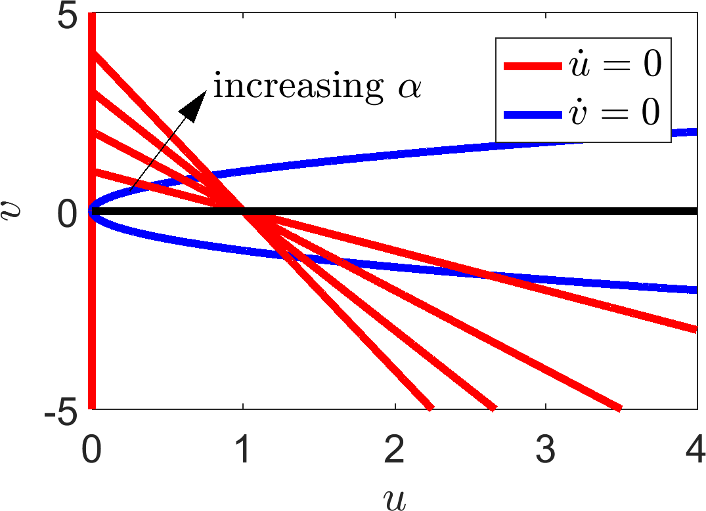
(a)
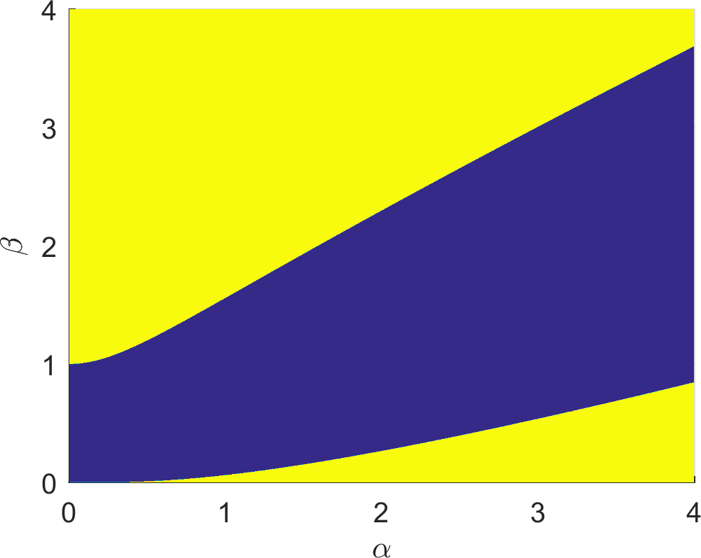
(b)
(a) Nullclines of equations (7.11) and (7.12). (b) Plotting the surface defined by equation (7.20). The yellow region illustrates the region where \(\textrm{Tr}(\boldsymbol{J})^2-4\textrm{Det}(\boldsymbol{J})>0\) making the steady state a stable node, whilst the blue region is where \(\textrm{Tr}(\boldsymbol{J})^2-4\textrm{Det}(\boldsymbol{J})<0\) and the steady state is a stable spiral.
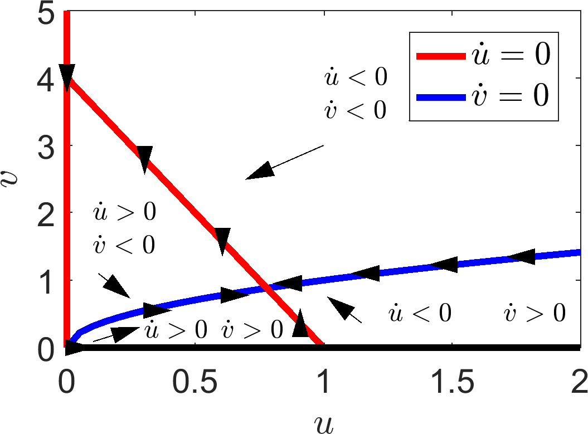
(a)
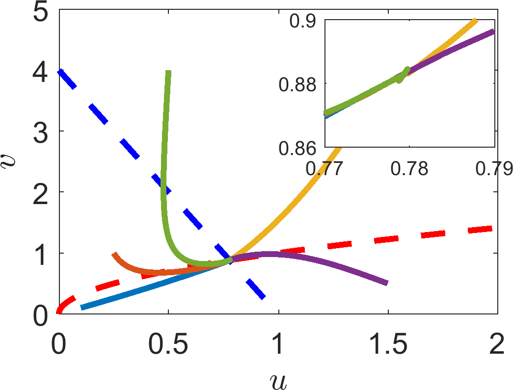
(b)
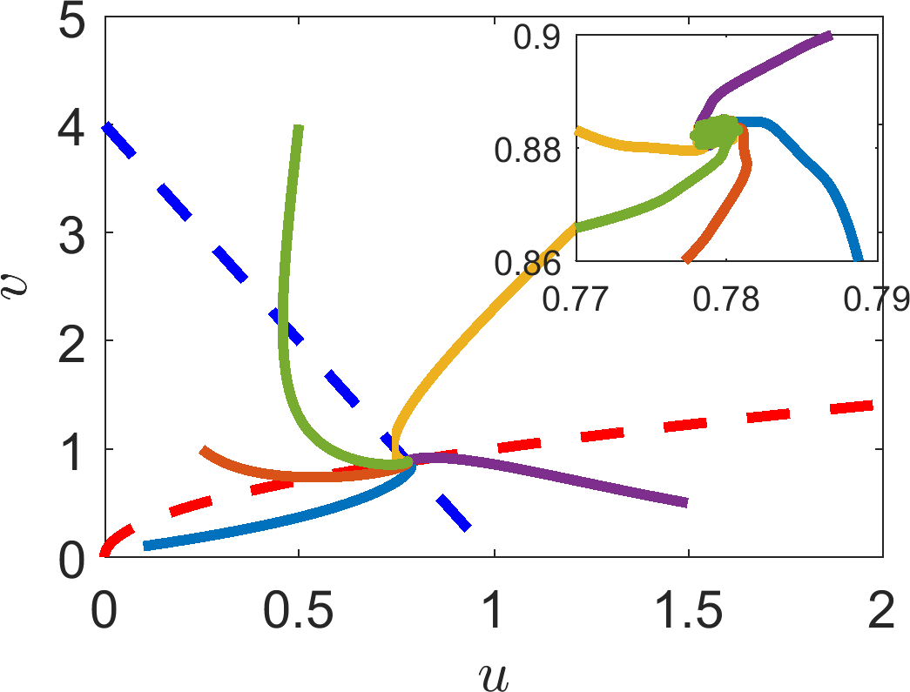
(c)
(a) Dynamics of equations (7.11) and (7.12) in all regions and on the nullclines. (b), (c) Multiple simulations of equations (7.11) and (7.12) with different initial conditions. In (b) the parameters are \(\alpha=4\), \(\beta=4\), making the steady state a stable node (see Figure 7.1(b)). In (c) the parameters are \(\alpha=4\), \(\beta=1\), making the steady state a stable spiral (see Figure 7.1(b)). The insets of each image demonstrate the dynamics very close to the steady state.
7.2 Pendulum example
The last example was explicitly described throughout and verbose. This example of the pendulum equation will be more terse.
Example 7.2.31: Pendulum
Consider
Trivially, we non-dimensionalise time using the scale \([T]=\sqrt{l/g}\) and note that the angle, \(u\), is already non-dimensional. Further, we let \(v=\dot{u}\) to derive
The steady states are \((n\pi,0)\), for all integers \(n\). Incidentally, the lines \(u=n\pi\) and \(v=0\) are also the nullclines. The Jacobian is
Hence,
The eigenvalues are
Thus, \((n\pi,0)\) is a saddle if \(n\) is odd and a centre if \(n\) is even. The directional data and nullclines are presented in Figure 7.3(a).
So, what does it all mean? Translating the results from Figure 7.3 into physical intuition we see that if \(v\) is small enough and \(u\approx 2k\pi\), for some integer \(k\), namely the angle \(u\) is a small perturbation away from the downward vertical then the dynamics cycle back and forth as the pendulum oscillates back and forth. However, if the initial velocity is large and the initial displacement, \(u\approx (2k+1)\pi\), for some integer \(k\), then the pendulum will continuously swing around and around.
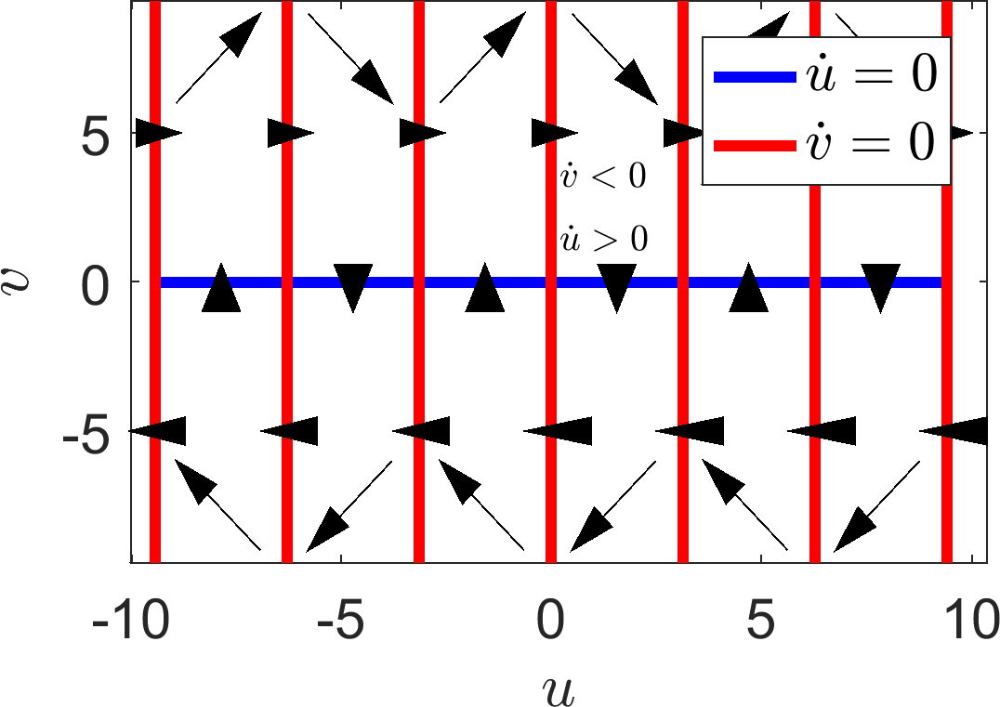
(a)
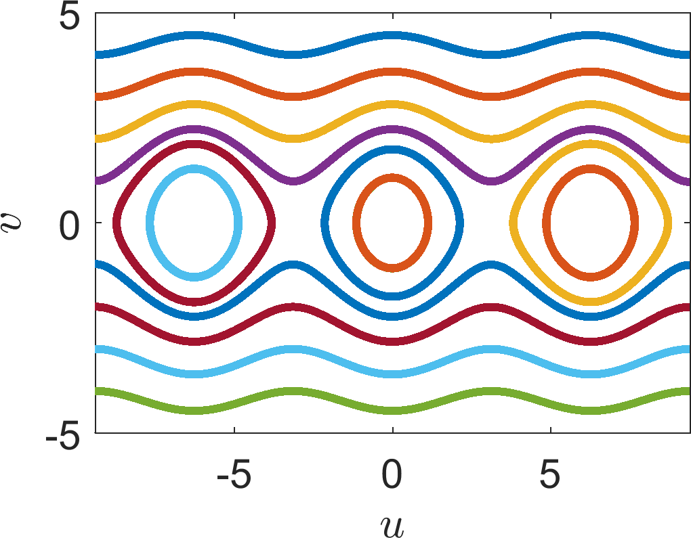
(b)
(a) Dynamics of equations (7.25) and (7.26) in all regions and on the nullclines. (b) Multiple simulations of equations (7.25) and (7.26) with different initial conditions.
7.3 Check list
By the end of this chapter you should be able to:
use all the tools developed throughout these notes to completely analyse a system of first-order ordinary differential equations in terms of the steady states available and their stability.